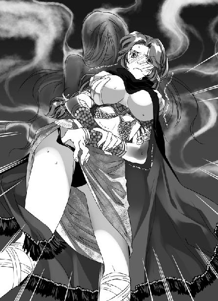
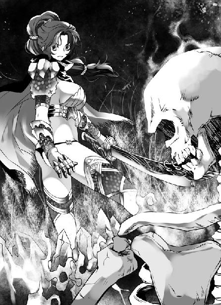

第18集·死生契阔
建康篇（6/8）
出版日期：2011-01-07
【本集内容简介】
程宗扬冒充东瀛忍者骗过了晋宫太监，没想到反被云丹琉追杀，不得已，只好使出老太监送的都卢难旦妖铃制服云丹琉。妖铃果然很妖，附在云丹琉身上脱云丹琉的衣，摸云丹琉的奶，让云丹琉大跳艳舞……
程宗扬在一旁看得很高兴，却也怕云丹琉秋后算账，令他尸骨无存！
计计相逼、环环相套，控制晋宫的幕后黑手终于现身。玄武湖上，石头城水师大营的正军舰队与荆州奇兵正面交锋，晋国权柄将落谁家？
※ ※ ※ ※ ※
封面人物：云丹琉

插图：云丹琉（1）

插图：云丹琉（2）
夜色如墨，宫墙间曲折幽深的小径积满落叶，两侧成排的古槐树影幢幢，一盏淡黄的灯笼摇曳着，在鹅卵石铺成的小径上投下朦胧的光辉。古槐枝叶交迭，树冠宛如乌云。夜风袭来，树冠在风中微微晃动，细小的槐叶簌簌而下。
时近九月，夜风拂在身上略带凉意，让程宗扬浑身的燥热略微清爽了些。
“飞鸟大爷，这边请。”前面提着灯笼的小太监一脸谄媚地说道。
计好在旁边小声纠正道：“是上忍啦，叫太君也行。”
相龙嘀咕道：“叫大爷他也没生气嘛。我看古供奉叫他太君，飞鸟大爷还有点不高兴呢。”
程宗扬心头微凛。这死孩子眼睛够贼的，自己脸上戴着面具，还能被他瞧出心情，看来要赶紧找个机会拍死他。
程宗扬杀机一起，两个小太监似乎感觉到什么，连忙闭上嘴。
两个小太监并没有对这位“东瀛上忍”的身份起疑，只是对他们来说，察颜观色是必备的生存技能。别说他戴着面具，就算把墨镜也戴上，脸都包住，照样能以鼻子嗅出他的喜怒好恶。
太初与昭明两宫由一道高墙隔开，远远看去，昭明宫赤乌殿高挑的飞檐犹如鸟喙，比起神龙殿的巍峨雄浑多了几分纤巧秀美。
萧遥逸一直没有露面，不知是否察觉到行踪已露，抢先躲了起来。那小狐狸狡诈得很，程宗扬并不担心他，要紧的是自己。如何干掉这两个死孩子，在古冥隐发觉之前救下云丹琉，逃出宫去，才是自己最该头痛的。
程宗扬估算了一下，老太监在宫里的势力并不强，他所倚仗的只有那些小太监——至少自己没有看到还存在其他同党。论修为，小狐狸应当稳胜他一筹，只不过他手里握着晋帝这枚棋子，让人投鼠忌器。
两名小太监领着程宗扬绕过昭明宫的重重宫禁，朝角落里一处荒僻的宫殿走去。
计好对倭语彻底糊涂了，这位飞鸟上忍说的正宗倭语自己半懂不懂，可自己说的夹生倭语，他居然都能听懂，这样神奇的效果，让计好又是奇怪又是得意，大概自己真有点语言天份吧。
计好一边比划，一边说道：“上忍太君，这是东面的冷宫，平常没有人来。古供奉怕那花姑娘起疑，才选了这里。”
“嗖嘎！”程宗扬握着禁军的佩刀，寻思如何出奇不意地突施杀手，给这两个死太监来个一刀两段。
那宫院不知多久没有人来过，庭中荒草丛生，殿宇上精心描绘的图案漆料早已脱落，色彩斑驳不堪，充斥着凄冷的气氛。
相龙从怀中摸出炭条，在门边画了个符记，低笑道：“这是云家死士约定的标记。我已经给那美妞传讯，约定三更之后在宫里见面，云侍卫长看见标记就会进来。”
计好道：“上忍太君大爷，那个瓶子，”他比划道：“瓶子……”
程宗扬想起古冥隐交给自己的玉瓶，伸手从腰间摸了出来。那只被称为“都卢难旦铃”的玉瓶是用一整块墨玉雕成，瓶身血迹斑斑，用来作瓶塞的深紫色水晶在夜色下微微闪亮。
“哟西！”程宗扬煞有介事地点头，拿着瓶子晃了晃，然后作势欲摔。
两名小太监急忙拦住，“上忍太君！不是这么用的！”
计好对相龙小声道：“你来。”
“上忍大爷。”相龙朝程宗扬谄媚地笑着，小心地接过瓶子，恭恭敬敬将它放在壁角隐蔽处，合掌默念几句，然后取下瓶口的紫水晶。
灯笼昏黄的光线下，一缕轻烟般的影子从瓶口溢出，袅袅升起，幻化成一个曼妙的身影。那影子只有三寸来长，她微微低着头，双目紧闭，纤细的双眉精巧如画，竟是个出色的美女。她空灵的身体像水晶一样透明，纤美的手臂上披着长长的舞带，仿佛一个空幻的精灵盈盈立在瓶口。
相龙合掌念诵道：“天地成，日月俱……”
随着他尖细的声音，瓶口透明的倩影眼睛慢慢张开，透出迷茫的眼神。
“出九幽，入冥冥……”
在咒语召唤下，倩影抬起脸，小巧的嘴巴张开，似乎在呼应冥冥中传来的召唤。
相龙双掌一分，戟指尖声喝道：“视我者，盲！”
倩影像听到世间最可怕的声音一样，空洞的眼中涌下血泪。
“听我者，聋！”
倩影双手掩在耳侧，在瓶口上方痛苦地挣扎着。
“逆我者，受其殃！”
倩影乞求般抬起手臂，发出无声的哭号。
小太监缓缓合起双掌，阴恻恻地尖声道：“幽幽冥狱，唯吾是从……”
最后一声咒语落下，倩影浑身一震，仿佛被利针刺中的蝴蝶一样升起，在瓶口寸许的高度盘旋而起。
相龙抹了抹额头的汗水，朝程宗扬讨好地笑道：“这是古供奉秘炼的幽冥阴魂，魂魄一旦被圣铃拘入其中，如同置身炼狱，永世不得翻身。”
说着他用指尖戳了戳那个影子，正在曼舞的倩影哀鸣一声，然后像上了发条的玩具，在瓶上摇乳摆臀，舞姿妖冶而淫荡。
相龙道：“上忍大爷，只要把圣铃放在这儿，等那个长腿的花姑娘进来，上忍大爷念个‘附’字，阴魂就会附在她身上。待制住她，再念个‘退’字，就能收回阴魂。”
程宗扬听着小太监不着四六的翻译，装成煞有介事的样子，眼睛紧盯那只难旦妖铃频频点头，一面用眼角余光观察相龙，一面悄悄按紧刀柄。等相龙口沫横飞地说完，突然侧身一挥，刀光匹练般飞出。
相龙怪叫一声，扑地闪开，叫道：“大爷！上忍！飞鸟太君！”
程宗扬心里大骂。自己满心切了这死太监，可忽略了这柄禁军佩刀比自己常用的窄了一半，出刀时差了少许，被他躲开。
程宗扬挺起肚子，粗声喝道：“你滴，武功滴，大大滴不行！喔塞罗！”
这名东瀛忍者突然发难，计好也吓出一身冷汗，连忙道：“上忍说你武功不行，让你赶紧滚。”
相龙脸上回过颜色，点头哈腰道：“小的知道，小的知道。小的这就滚！”
相龙连滚带爬出了宫门，小声道：“我的娘啊，这倭贼真不是人啊……”
程宗扬摸了摸计好的脑袋，“你滴，大大滴好！”
计好险些尿了裤子，赔着笑脸眼巴巴看着这名东瀛上忍，巴不得也和相龙一块儿滚出去。
那位上忍却突然虎起脸，“你滴，钻进去！忍术滴，看到死啦死啦滴！”
宫殿是三间相连，眼见东瀛上忍指着侧殿壁角的一座破橱，计好赔笑道：“上忍大爷，小的不敢看，连耳朵都塞起来滴。”一边说一边钻到橱内，拿出一条帕子撕成两半，紧紧塞住耳朵。
真乖。程宗扬心里暗道。他本来想关上橱门，一刀把小太监连人带橱劈成四截，这会儿倒不必急着下手。
程宗扬拿起灯笼挂在门侧，大马金刀地坐在一张破败的坐榻上，心里盘算着怎么解决云丹琉这桩麻烦。
老太监设计骗云丹琉入宫，又请来东瀛忍者化装成死士下手，本来安排得挺好，却被自己赶上。程宗扬准备等她进来就主动揭穿身份，告诉她云家和临川王的事已经被老太监知道，让她立刻想办法离开禁宫去通知云苍峰。至于后面的事，就看云老哥和会之他们准备得如何了。
程宗扬摸了摸下巴，如果云丫头不信呢？
大不了一拍两散，自己拍拍屁股走人，管他小侯爷还是大小姐，大伙儿都自求多福吧。说起来如此长夜，其实抱着卓美人儿睡一觉才是正事，这种偷鸡摸狗的勾当作多了也很乏味呢……
※ ※ ※ ※ ※
子时在不知不觉中消逝，程宗扬已经等得不耐烦，云丹琉却始终没有出现。他站起身，活动活动四肢，听外面还没有动静便晃到偏殿，突然一把拉开橱门。里面的小太监吓了一跳，脑袋“砰”地撞在橱板上，手指还紧紧塞着耳朵。
程宗扬笑眯眯拍了拍他的脑袋，“哟西！”
关上橱门，程宗扬直起腰，心头忽然一凛，飞快地转过身体，一手握紧袖中的珊瑚匕首。
身后立着一个高挑的身影，她穿着斗篷，一顶软布兜帽遮住她大半面孔，两只明亮的眼睛在帽沿的阴影下熠熠生辉。
程宗扬呼了口气，干笑道：“原来是大小姐，吓我一跳……”
云丹琉目光在他身上略一停留便移到一旁，在殿内边走边看。那丫头身高腿长，走起路来步子迈得极大，很少有女人能像她一样，迈着大步还走得好看。
她黑色的斗篷长及脚踝，遮住身上那件尽人皆知的银鳞细甲，这会儿嫌热似的翻下兜帽，乌亮的秀发黑瀑般流淌下来，露出肩侧弯曲的刀柄。
第一次见到云丹琉，还是在江口的船上。那次见面离得太远，后来再见面，程宗扬躲都来不及。这会儿离近看，才发现她长发用一只玳瑁壳束在脑后，发梢像波浪一样鬈曲。雪白的面孔上，一双杏眼显示出地道的建康血统，瞳孔却在深黑中隐隐透出一抹蓝色，与乌黑浓密的鬈发一起，流露出浓郁的海洋气息。
云丹琉盯了一眼橱柜，然后收回目光，昂然走入荒芜的正殿。程宗扬回过神来，连忙跟过去，感觉自己就像这位大小姐屁股后面的跟班，人家连眼角都不带瞄自己的，心里嘀咕：这位大小姐看起来很难伺候啊。
云丹琉回头望向穿着禁军服色的程宗扬，脸上毫无表情地淡淡说道：“找我有什么事？”
程宗扬咳了一声道：“其实是出了一桩大事……”
云丹琉冷冰冰截断他，“你的声音怎么了？”
这丫头还真精细，自己一开口就让她听出异样。程宗扬哈哈一笑，伸手摘下面具，“大小姐机敏过人，在下实在是很佩服，哈哈……”
“是你？”
云丹琉森冷的口气，让程宗扬笑到一半就激灵灵打了个冷颤。
“别误会啊！”
程宗扬叫声未落，一片耀目青光便从云丹琉斗篷间挥出。他想也不想便朝后闪去，手中刚摘下的面具被凌厉的刀风卷起，还未落地就被绞得粉碎。
云丹琉擎出那柄气势逼人的偃月长刀，盯着程宗扬，美目中透出滔天怒意，“竟然是你这小人！”
程宗扬忙叫道：“弄错了！我是来救你的！”
云丹琉森然道：“这面具是哪里来的？”
程宗扬提防着她手中的长刀，小心道：“我说是捡的，你信不信？”
云丹琉冷冷盯着他，一言不发。这丫头个子比自己还高，此时斗篷分开，露出里面的银鳞细甲，丰挺的双乳高高耸起，带给自己强烈的压力，非常强烈。
趁口水还没有流出来，程宗扬连忙举起手，一口气说道：“好吧！其实是云老哥让我混到宫里来给你报信的！”
“撒谎！”云丹琉从齿缝中挤出两个字。
程宗扬病急乱投医，“外面的符记你看到了吧？如果是外人，怎么会知道你们云家的秘密符记？”
“若非我云家的死士自知必死，怎会用上九死绝命符！”云丹琉踏前一步，深邃而微蓝的眸子透出怒火，“干你娘！该死的小人！拿命来！”
程宗扬吃惊地张大嘴巴。云家那个死士临死还摆了老太监一道，没想到自己歹命给撞上了。更意外的是，这丫头竟然对着自己大爆粗口！小紫那么流氓的死丫头都比她含蓄。这位大小姐在海上待久了，好像没学什么好东西……
程宗扬叫道：“大小姐，你听我解释！”
云丹琉却懒得听他解释——这厮在深宫以自家死士的面容出现，把自己引来此地，难道还有好事不成？
“狗贼！我今日要把你心肝摘下来，看看是什么颜色！”
面前的偃月刀散发出漫天杀气，潮水般狂涌而来。那柄禁军佩刀再不顺手，程宗扬这会儿也顾不得了，急忙横刀一挡。
“叮”的一声，佩刀应刃而断，折断的刀刃险些砍在自己腿上。程宗扬竭力掷出半截刀柄，趁云丹琉侧身闪避，急忙转身拼命朝大门闯去。
这丫头已经丧失理智，完全不可理喻了，啥也别说了，赶紧逃命要紧。自己难得冒充忍者，好不容易撑到现在，连黑魔海妖人那一关都过了，如果被她砍死，实在太冤了。
“想走！拿命来！”
云丹琉低叱一声，偃月刀如影随行，紧贴程宗扬的背脊，狂猛的刀气只差一线便透体而过。
眼前的局面自己做梦都没想过，只能说这丫头太狂暴了。同样是云家的人，云如瑶斯文柔弱，这丫头平常只是凶了点，这会儿露出真面目，却是野气十足，活脱脱就是个女匪首。程宗扬心里禁不住怀疑，云家的舰队在海上都干的什么勾当？黑魔海那个倒霉的屈供奉，不会是被这丫头黑吃黑了吧？
程宗扬迅速估量一下，云丹琉的修为比凝羽只高不低，说第四级都有点谦虚。如果自己有双刀在手，一套五虎断门刀耍下来，还能虎头蛇尾地抵挡几下，这会儿赤手空拳，活生生就是砧板上的一块肉，她想怎么砍就怎么砍，想砍成什么样就砍成什么样。
门外传来一阵急促的脚步声，却是相龙躲在外边，先看到这名“东瀛上忍”突然飙出满口华言，接着云侍卫长大爆粗口，吓得肝胆俱裂，不顾一切地朝外狂奔。
程宗扬想死的心都有。这一下弄巧成拙，没设计到古冥隐，自己反而和云丹琉火拼起来。如果让那死太监知道，非笑掉他的大牙不可。
背后劲风袭来，程宗扬拼命往地上一扑，躲开偃月刀的凶猛一击，接着肩后被重重蹬了一脚，刚愈合的伤口仿佛被重锤击中，几乎重新绽裂。
这会儿自己离房门只有一步之遥，外面就是满庭荒草。但他有九成把握，自己顶多把一腔热血洒到上面。程宗扬狂吸一口气，在滚到门边的刹那，突然双脚一蹬，贴着地面反向朝殿内窜去。
程宗扬与云丹琉错身而过，云丹琉一脚踏在他肩后，毫不停顿地飞身跃起，直接掠上院门。程宗扬好不容易愈合的伤口被踢了两次，肩后剧痛，只能看着云丹琉飞身越过整个庭院。
云丹琉足尖在院门檐上一点，弹起丈许。她身材高挑，修长的美腿凌空舒展，像一只飞驰的神鹿，动作洒脱矫健，只迈了两步就跨过平常人十余步的距离，直追到相龙身后。
相龙听到身后的风声，不禁魂飞魄散。他怪叫一声，从靴中拔出一柄短刀，竭力朝云丹琉刺去，一边身体左斜，准备趁云丹琉拆招的时候，蹿进旁边的槐林躲藏。
云丹琉来势极快，风一样掠到相龙身后，偃月刀划过一道弧线，高高举起，身前空门大露，竟似没有看到相龙手中的短刀。
相龙抓住机会，短刀狠狠扎在云丹琉腹侧。相龙也是小心，见她上身的银甲不似凡物，才选择没有银甲保护的小腹。谁知刀尖刺的部位如中金石，连衣服都没有刺穿就被反震回来。
相龙右手齐腕而断，口中鲜血狂喷，紧接着脖颈一顿，没等他明白过来就被偃月长刀斩下首级。
云丹琉一脚把小太监的尸首踢倒，然后提起长刀，鲜血随着刀锋淌到刀尖，迅速流到鹅卵石铺成的小径上。
程宗扬离她有十几丈远，隔着一整座院子，却没有一点安全的感觉。那丫头犀利的目光，让自己想起一种生物——龙！而且是霸王龙！
云丹琉斗篷飞起，两个起落，踏在阶上，眼中流露出毫不掩饰的轻蔑。
“登徒子！”
程宗扬一阵光火。这么一会儿工夫，已经被两个人称作登徒子了，自己有那么好色加猥琐吗？
“大小姐明鉴！”程宗扬厉声道：“我与云老哥是生死弟兄，今次完全是误会！”
“三叔怎会看中你这种小人？”云丹琉踏进殿内，冷冷道：“当日在江口已经饶你一命，谁知你却与阉贼勾结，暗算我们云氏！这会儿想求饶？晚了！”
危险！危险！程宗扬心头警声狂响。刀风及体的刹那，他拼命往旁边一滚，躲开偃月刀的凶猛一击。
云丹琉身材比程宗扬还高了少许，加上五尺长的偃月刀，占尽优势。她洁白的手掌擎起长刀，毫不犹豫地朝程宗扬胸口劈去。
当初在苏妲己手下自己还有一拼之力，毕竟那妖妇起初不想要自己性命，没想到这丫头下手比那妖妇还狠，丝毫不给自己活命的机会。程宗扬来不及起身，半跪在地上拔出匕首，挡住云丹琉要命的一刀。
凌厉的刀风呼啸而至，重重劈在匕首上。程宗扬手腕剧痛，臂上的禁军皮甲被劲气劈开，脱落的甲片四散疾飞。
云丹琉美目乍现，偃月刀微微一退，接着以更快的速度袭来。
程宗扬交手一招，就知道大势非常不妙。云丫头刀法走的是刚猛一路，宁折不弯，一旦出手就像怒浪翻腾，攻势越来越猛烈。自己如果还想和斗苏妲己那样赌命，只有死得更快。
程宗扬一手伸到怀中，不管是什么东西，一把抓出来，却是几个寸许长的小卷轴。这就是传说中的忍者卷轴了，程宗扬几乎流下眼泪，传说中可都没说这些卷轴该怎么用，附个说明书有这么难吗？
程宗扬抓住一支卷轴，用力朝云丹琉扔去，口中大喝一声咒语：“我干！”
※ ※ ※ ※ ※
卷轴落在地上，迸出一团浓烟，接着无数细小的声音响起，不知从哪里来的细针从烟雾中激射出来。
云丹琉一手卸下斗篷，程宗扬眼前一亮，看着她身上银白的鳞甲下胴体美妙的曲线。
没想到这丫头里面穿得这么清凉，就像是随时准备下海游水。云丹琉上身只有一件薄薄的银甲，腰间是一条碧蓝的斜边裙，裙角用一只扇贝系住。一条白生生的修长美腿从裙角裸露出来，雪白的大腿浑圆而又光滑，笔直的小腿裹着银鳞胫甲。那双鞋子不知是用哪种深海物品制成，为了便于排水和清除海砂，鞋尖是敞开式的，露出秀美的脚趾。鞋沿两条莹白的软带从脚踝绕过小腿，一直缠到膝间，将鞋子和胫甲连为一体。鞋跟是朱红色的珊瑚，使她身材更显高挑。半透明的鞋身微微泛起光泽，给她腿部的肌肤涂上一层珍珠般的莹白光辉。
不过这会儿实在不是欣赏的好时机。云丹琉斗篷一卷，将卷轴放出的浓烟和细针一并卷起，然后挑起眉峰，“原来是个倭贼！难怪好色成性，卑鄙下流！”说着长刀再次劈来。
程宗扬不知道让真正的飞鸟熊藏对上这丫头还有什么忍术能用，不过他知道自己该倒霉了。
刀风在殿内激荡，那张坐榻被长刀扫中，碎木像子弹一样飞溅开来，有几块飞出数丈，撞在计好藏身的橱柜上。一阵哒哒作响，柜门被震得打开一线，露出里面的小太监。计好两手堵着耳朵，惊恐地看着这边，接着橱门又弹了回去。
程宗扬一手伸在怀中，摸到那把光秃秃的剑柄，他心里一动，正要拿出来，忽然“叮”的一声，角落传来一声清越的铃声。
程宗扬抬眼看去，只见墙角那只血色斑斓的玉瓶被碎木击中，微微摇晃，瓶口飞舞的暗影震荡着，似乎随时都会散开。
程宗扬拼了老命一声大叫：“附！”
一股森冷的气息从脚下升起，身边破败的宫殿微微一晃，仿佛被无形的力量扯得扭曲。
镂刻着飞龙偃月的长刀在离胸口寸许的位置停住，青森森的光芒在刀锋上微微晃动，令程宗扬肝胆欲裂。被这东西砍中，自己一腔五公升的热血就等于一口气全捐献了。
程宗扬抬眼看去，只见云丹琉玉容沉静如水，鬈曲的发梢微微震颤，她牙关紧咬，双手紧紧握住长刀，似乎正处于极大的痛楚中。片刻后，她长刀一退，闪电般朝旁边砍去。
在云丹琉身旁多了一个朦胧的幻影，依稀是刚才那个在难旦妖铃上曼舞的倩影，不过这时已经长到数尺，颜色也更淡。
冥冥中仿佛传来一丝轻快的笑声。在刀锋劈中的刹那，幻影像被风吹起一样飘飞起来，一边张开柔美的双臂，温柔地朝云丹琉颈中拥去。
云丹琉神情冷峻，偃月刀在身侧怒龙般翻滚挥舞，不时用肘、膝甚至秀发攻击，试图摆脱身边的幻影。那个影子却仿佛黏在她身上，无论她攻势再凌厉，总能无孔不入地欺近她的身体。每次幻影空灵的纤手拂中她裸露的肌肤，云丹琉都像被火烫到一样浑身震颤。
这完全是一场不公平的较量，没有形体的幻影像幽灵一样在云丹琉身侧轻盈地飞舞，无论她刀法再凌厉，都无法对幻影造成伤害。渐渐的，那个美妙的幻影攀住云丹琉的手臂，一部分与她的身体融合。
程宗扬心有余悸地退到门侧，把匕首横在胸口。情急之下，他召唤出幽冥宗世传秘宝都卢难旦妖铃中的阴魂，施术的相龙已经被云丹琉干掉，天知道这阴魂附在她身上有什么后果。
一炷香时间后，飘渺的阴魂已经有一半融入云丹琉体内。云丹琉眼神虽然坚毅，刀法却无可避免地开始散乱，虽然每出一刀都用尽全身力气，但想把阴魂逼出来，已经是不可能实现的奢望。
程宗扬这时才终于放下心事，抹了抹头上的冷汗。眼前这位云家大小姐奋力与侵入体内的阴魂挣扎，她修长的美腿蹒跚着，似乎被一股无形的力量操控，动作越来越乱。
忽然那个空幻的倩影一荡，整个融入云丹琉体内。云丹琉露出惊骇欲绝的眼神，手掌一松，偃月刀锵然落地。
程宗扬讶异地瞪着被阴魂附体的云丹琉，忽然放声大笑起来。
眼前的长腿美女侧过脸，两手捏住白玉般的耳垂，手指一翘一翘，仿佛在给自己戴上一只无形的耳环。她表情似乎也被阴魂控制，露出少女的娇羞，与刚才的狂暴相映成趣，只是眼中的怒火越来越强烈。
云丹琉愤恨地瞪着程宗扬，两手却不由自主地比拟动作，先一边一个戴好耳环，轻轻抚了抚，然后洁白的手掌沿着颈子高过圆耸的胸乳，再往下抚过细长的腰身，接着从腰后抚过圆翘的美臀，仿佛一个艳丽的舞姬向主人展示自己胴体的轮廓。
程宗扬情不自禁地吹了声口哨，看到云丹琉恚怒的眼神才赶紧收敛一些，呵呵笑道：“大小姐，你真的误会了，其实我真是来救你的……”
云丹琉仿佛没有听到他的声音，自顾自地扭动肢体。她心里羞愤欲绝，那个卑鄙小人不知用了什么诡计，在她出刀的刹那仿佛有个冰凉的影子倏然附上了身体。一番挣扎之后，不仅没有挣脱，还被它成功侵入体内。那股阴森寒意不仅控制了她的手脚，还控制了她的面部表情、呼吸，甚至舌头。在她不由自主转动身体的同时，那股阴森的凉意还在体内，不住往心脉和脑际侵蚀。云丹琉可以想象，一旦被这股妖异气息侵入脑际，连神智也被占据，自己就会变成一具傀儡，任人摆布。
云丹琉死死咬住牙关，竭力抵抗寒意的侵蚀。忽然她喉头一甜，唇角涌出一股鲜血。
程宗扬好不容易死里逃生，本来抱着看笑话的心情正在得意，看到血迹才惊醒过来，连忙擦了把口水，安慰道：“别怕别怕！我这就给你解开——先说好，你不能再拿刀砍我啊！好了，听我命令——”
话到嘴边，程宗扬突然呆住了。施放咒语的“附”字，自己记得挺清楚，解除咒语那个字好像是……
程宗扬翻眼想了半天，云丹琉又吐出一口鲜血，脸色变得苍白。
程宗扬心里发急。自己是来救人的，真把她搞死，自己只好剖腹谢罪了。
亲娘啊，解除的咒语到底是哪个？
解除，解除……程宗扬朝云丹琉一指，“解！”
云丹琉身体一震，手指抬起，勾住银甲的环扣。她身上那副银甲甲片材质奇异，鱼鳞状的甲片又薄又韧，既泛着金属的光泽，还有着金属所没有的弹性。张开的胸甲宛如龙爪，攀在她丰挺的雪乳上，与胴体的曲线紧密地贴在一起。这时环扣一松，胸甲随之弹开，露出甲内雪团般的美乳。
“错了！错了！”程宗扬一叠声叫道。谁知道“解”是解衣服的意思？完全是误会！
面前的少女仍没有停住动作，她逐个解开银甲的环扣，胸甲越来越松弛，几乎能看到那团浑圆的雪肉顶端诱人的红嫩。
程宗扬心脏几乎跳出喉咙，傻呼呼张大嘴巴，看着云大小姐在自己眼前解甲露体。银甲还剩最后两个环扣未开，就要从云丹琉胸前滑落。只见云丹琉一手勾住环扣，另一只手却奋力握成拳头，重重打在自己解甲的手腕上。
程宗扬几乎能听到腕骨碎裂的声音。云丹琉奋然一击打伤自己左腕，那件胸甲终于没有全部解开。她吐出两口血，重新控制住右手。这丫头真够烈性的，对自己下手都这么狠……
“别急！别急！”程宗扬一边大叫，一边飞快地思索着，不是解除，那会是什么？
从头开始想，自己把阴魂弄到云丫头身上，这会儿又想让阴魂从她身上脱离……程宗扬脑中一亮，大声叫道：“脱！”
云丹琉玉手绷起青筋，眼底透出一丝绝望。她身子猛然一挺，拖着受伤的手腕伸到裙内。
为了便于在船上行动，她的裙子是一条简易的三角巾，一侧垂到膝间，另一侧被扇贝系住收到大腿处。她受伤的手掌在扇贝另一侧，这时伸到裙内，腿边碧蓝的丝绸被拉起，两条白玉般的美腿笔直伸出，在珍珠般的莹光下熠熠生辉。那两条美腿的比例接近身高一多半，又长又直，雪滑圆润的大腿紧紧并在一起，能看到大腿根部那条窄小的亵裤。而这丫头就当着自己的面，用受伤的手掌勉强勾住亵裤边缘，准备把它脱下来。
程宗扬双手抱头，惊愕地看着这一幕，心里一个声音大叫：快制止她！另一个声音则用更大的声音叫道：让她脱！
云丹琉只剩下右手受自己的意识支配，她右手紧紧拉住亵裤右侧，受伤的左手拉住亵裤另外一边。双手角力的结果，是那条丝织亵裤被扯得倾斜，一侧拉到腰上，一侧则几乎褪到臀下，几丝乌亮而纤软的毛发从亵裤边缘翘出。
云丹琉美目透出骇人的恨意，她红唇颤抖着，被阴魂控制的舌尖却吐不出一个字。
亵裤几乎被扯成一条斜线，勉强掩在腹下。就在云丹琉无法支撑的一刻，程宗扬一把抱住她，两手抓住她亵裤边缘。云丹琉眼中的恨意被恐惧代替，但她的软弱只有一刹那，接着瞳孔深处露出骇人的愤恨。
程宗扬咬紧牙，用尽全部毅力，使劲向上一提，帮她提上亵裤。心里暗道：这么凶的美女也怕强奸啊。
“大小姐，你现在相信了吧？”程宗扬在云丹琉耳边道：“我真的是来救你的。”
说着他忍不住抱怨道：“你长这么高干嘛？害得我还要踮着脚跟你说话。”
这会儿两人肌肤相接，程宗扬抱着云丹琉的腰，那丫头丰满的乳房正顶在自己胸前。程宗扬凭经验判断，她乳房在Ｃ罩杯与Ｄ罩杯之间。和小香瓜比起来，尺寸稍逊，但那种光润坚挺、饱满耸翘的形状，却别有一番美态。
程宗扬狠狠咽了口口水，接着浑身汗毛都竖了起来。他怪叫一声，拼命放开云丹琉，紧接着那丫头裹着银白胫甲的膝盖就贴着自己的阴囊掠过，剧烈的风声令程宗扬阴囊收紧，胯下传来一阵强烈的疼痛。只差那么一点，自己就可以尊敬地称古冥隐前辈了。
云丹琉被阴魂控制的脚步踉跄一下，忽然一足点地，轻捷地转了个圈子，接着右腿抬起，纤软的腰肢朝后弯折。她双腿修长而又浑圆，程宗扬估测她不穿鞋子，身高就有一米八六，仅腿长就超过一米一。这时一条雪白的美腿用一个漂亮的舞蹈动作抬高，白光光的大腿直直竖起，碧蓝如水的短裙荷叶般翻起，两条白玉般的大腿交错分开。腿缝儿间，窄小的亵裤紧紧裹住下体，腹下那片隆起的秘丘在薄丝下呼之欲出。
残破而荒凉的宫室内，一个美貌少女半裸着玉体旋转起舞。她上身松开的银甲在胸前摇摇欲坠，两条雪白而修长的美腿时开时合，做出种种令人血脉贲张的动作。
她身高腿长，舞姿别有一番风情，此时足尖绷紧，像张开的玉扇一样抬到头顶，笔直挺起，将光润如玉的美腿整个暴露出来，轻盈地旋转曼舞。修长的美腿仿佛两条光洁的玉柱，在灯笼昏暗的灯光映照下，白花花的肌肤耀目生辉。
程宗扬没想到在这里还能目睹到如此艳丽性感的大腿舞，一边两手本能地护着裆部，一边眼都看直了。
眼前的美少女与自己以前见过的都不一样，腰侧的扇贝、脚底的珊瑚、微蓝的瞳孔、鬈曲的发梢，无不洋溢着浓郁的海洋风情。知者能认出这是云家大小姐，不知者还以为是哪个野性十足的女海贼在表演热辣的艳舞……
云丹琉扭动腰肢，碧蓝的短裙飞舞起来，露出大腿尽头那只雪滑的美臀，她两手抚住雪臀，一边弯下腰去，忽然唇角又涌出一股鲜血。
云丹琉拼尽全力，在阴魂的侵蚀下挣得一丝空隙，然后俯下身，额头用力朝地上的长刀撞去。
程宗扬扑过去一脚踢飞长刀，顺势滚到墙角，抓住紫玉塞子，一把盖住瓶口。
云丹琉像被抽去丝线的木偶一样跌倒在地。程宗扬松了口气，身上不知道是因为紧张还是兴奋，湿漉漉都是冷汗，拿着那只妖铃的手都在发颤。
程宗扬把妖铃塞到怀中，先把偃月刀抢到手里，才小心地靠近云丹琉。
云丹琉失去血色的面孔一片苍白。程宗扬盖住妖铃的同时，附在她身上的阴魂随即离体，她身体像被突然抽空一样，失去所有的力气，但呼吸渐渐平复，看来没有大碍。
忽然一阵脚步声响起，程宗扬愕然抬首，只见一个禁军大汉杀气腾腾地闯进庭院，笔直朝自己冲来，然后在离自己还有四五步的地方突然扑倒，露出背后一把淌血尖刀，就这么死在自己面前。
程宗扬嘴巴还没合上，一个鬼魅般的身影随即飘了进来。古冥隐看到地上的云丹琉，眼中顿时露出喜色，他朝尸首瞟了一眼，接着出指如风，点中云丹琉腰背几处大穴。
“古供奉！古供奉！”计好从橱中钻出来，连滚带爬地扑到古冥隐脚边，连声道：“这位上忍太君真了不起！小的在旁边看得清清楚楚！上忍大爷先骗住云侍卫长，然后扔出一个卷轴，‘噗’的一声就把她的衣服扒干净了！”
古冥隐怔了怔，低声道：“这是什么手段？”
计好赔笑道：“上忍的手法小的也没看清楚——后来，这丫头就倒下了。”
古冥隐目光闪闪，打量着程宗扬，眼中犹疑不定。程宗扬汗流浃背，这才想起来自己面具已经被云丹琉毁掉了，这会儿直接露出原形。
计好贴在古冥隐耳边道：“上忍这张脸也是假的，江湖险恶，他们忍者一次要戴三五层面具，从不以真面目示人。”
古冥隐微微颔首，“相龙呢？”
计好谄笑道：“上忍太君嫌他武功太低，把他打发走了。是小的在旁边给上忍大爷帮的忙。”
相龙的尸体被云丹琉踢到槐林里，古冥隐没有看到。他抬起眼，尖声道：“上忍好手段！古某佩服！”
计好磕磕巴巴说了几句，程宗扬点了点头，也用一串鬼话对付过去。计好扭头，眼也不眨地朝古冥隐流利地说道：“上忍太君说，抓到这个女人很不容易。如果不是小的在旁边帮忙，说不定就让他跑了。”
古冥隐笑道：“自然要给你记上一功。”
计好低头道：“小的不敢。”说着又小声嘻笑道：“这位飞鸟上忍好色得很，刚才就抱着云侍卫长扒她下面的小衣呢。”
古冥隐尖声大笑。
程宗扬心里竖起大拇指，这死太监有前途啊。仗着两边语言不通，在中间大肆扯谎，给自己表功。其实他一直堵着耳朵躲在橱中，直到柜门撞开才偷偷看到外面的情形，等古冥隐进来，怕主子指责他贪生怕死，连蒙带诳编出这么一套来。
自己的小命一时半会算是保住了，可让云丹琉这么一搅，本来救人的，倒成了两边联手，把她生擒活捉。他同情地看了云丹琉一眼，那丫头紧闭双目，胸口不住起伏，不知道她这时对眼前复杂的情形猜到了几分。
程宗扬指着那具专门奔过来死给自己看的尸首，“这个滴，什么滴干活？”
古冥隐阴恻恻道：“这厮冒充禁军潜入宫中，死有余辜。”
他将尸首踢得翻转过来，只见那人手中抓着一张硝制过的羊皮，上面涂抹的银盐显出纵横的纹路。
古冥隐哂道：“影月宗贼心不死，三番五次遣人入宫。怎知本座在宫内所置禁咒，正是为克制他们的影月之术而设。灵力越是敏锐，所受反噬越是凌厉。即便影月宗宗主亲至，也难逃罗网！哈哈！”
程宗扬心知肚明，肯定是小狐狸不小心撞上禁咒，正好碰上影月宗的人也来窥视，于是扯来顶缸。至于古冥隐，也未必不知道里面的差别，只不过在自己面前不会漏出底细。
古冥隐俯身去抓取云丹琉，却被程宗扬挡住。
程宗扬大摇其头，“这个，我滴！”说着抱起云丹琉半裸的香躯。
古冥隐仰天笑道：“这贱人是上忍亲手所擒，自然是上忍收为女奴。”
程宗扬色迷迷在云丹琉屁股捏了一把，嘴唇不动地嘀咕道：“云丫头，听见了吧？配合一点，咱们想办法溜出去。”
※ ※ ※ ※ ※
几乘坐辇沿着鹅卵石铺成的小径蜿蜒行来。几名小太监跟在辇后，前面挽着红绸牵辇的却是几名半裸宫女。
最前面一乘坐着古冥隐，中间一乘是半死不活的晋帝，程宗扬抱着云丹琉坐在最后一辆辇舆上。在他脚前卧着一个光溜溜的艳妇，此时正耸翘着肥白雪臀，被他摸得浑身乱颤。
古冥隐摆开阵仗，邀程宗扬乘辇去昭明后宫处置云丹琉。自己用脚后跟就能猜到，这死太监如此招摇，无非是想引萧遥逸出手。这一招对别人也许行，对小狐狸……反正程宗扬是不抱半点信心。
从古冥隐的举动里，看得出黑魔海确实对星月湖八骏忌惮万分。老太监已经知道玄骐的存在，更肯定他就潜在宫中，却迟迟不敢与他正面硬撼，出动人手围杀这只小狐狸。除了老太监对星月湖八骏的身手深具戒心，还可以确定自己的猜测：古冥隐在宫内人手不足。除了这些毛都没长齐的小太监，他并没有什么得力的手下，否则也不用千方百计地集中力量来应付近在咫尺的萧遥逸。
做出这样的判断后，程宗扬心头大定，甚至有些盼着小狐狸现身，赶紧让自己从这个已经变得不好玩的局里解脱出来。
不过老太监的举动却在无意中将程宗扬狠狠吓了一跳。他刚把穴道受制的云丹琉抱到辇上，那个小名芸娘的周太后便被小太监带着出来。见到他的面孔，太后像见到鬼一样险些当场叫出声来。
程宗扬当机立断，冲过去一把抱住她，狠狠吻住她的小嘴，像色中饿狼当着众人的面把她拖到辇上，扒掉她刚穿上的衣服，在她光滑的肉体上大肆揉弄。
看到程宗扬急色的样子，那些小太监都背过脸偷笑。古冥隐瞪了手下一眼，让他们免得激怒贵客，然后吩咐起辇。
晋国很少有轿子，至少在建康城，人们使用的交通工具大多是牛拉的辕车。宫里的坐辇与石胖子完全由人力抬行的步辇不同，辇下装有轮毂，前面系着绸制的挽索，由人力牵引。
车轮在鹅卵石上颠簸，掩盖了辇中的声音。程宗扬用装神弄鬼的口气在太后耳边阴声道：“我是上天仙使……能有千般变化……化……化……”
那美妇畏惧地收拢身体，刚认出他时的惊愕被深入心底的信任化解。程宗扬松了口气，又担心她说出什么，漏了自己的马脚，索性让她头前臀后地趴在自己脚边，手指放在她臀间反复刺激她的Ｇ点，让她顾不得起疑。
美妇早已神智沉迷，这时翘着屁股像个淫娃一样扭臀乱叫，已经浑然忘了他就是自己在舟中接过的客人。
不过自己的下流举动一点不差地全都落到了云丹琉眼中。那丫头目光中的鄙夷、憎恨、厌恶、愤怒……足够把自己埋了，再立个碑。
“妈的！要不是为了你这丫头片子，我用得着这么做吗！”程宗扬在云丹琉耳边道：“大小姐，我求你了，你就信我一次……”
云丹琉嘴唇动了动，似乎想说什么，程宗扬连忙凑过去，“什么？”
云丹琉银牙一紧，毫不客气地咬住他的耳垂，几乎把他耳朵咬下来。
程宗扬目眦欲裂，硬生生把惨叫声吞到肚里，手指紧紧抓住云丹琉的大腿，痛得热泪盈眶。
“松口……”程宗扬竭力装出好色如命的表情，一手抱着云丹琉，一边摸着美妇白花花的屁股，脸上淫笑满面，口气却几乎声泪俱下。
云丹琉死死咬住他的耳朵，毫不松口。程宗扬拔出手指，嘶声恐吓道：“摸你脸！”
指上温热的液体几乎滴到云丹琉脸上，那该死的丫头才松开牙齿。
“我干！”程宗扬在心里痛骂一声，急忙摸了摸耳朵，上面两排牙印痛得钻心，幸好还是完整的。
古冥隐的尖笑声遥遥传来，“那贱人烈性得紧，上忍莫急，一会儿到了宫中再慢慢炮制她！”
计好刚凑过来准备翻译，被心情极端恶劣的程宗扬挥手赶开，“八格！”
计好咽了口唾沫，乖乖滚到一边。
程宗扬瞪着云丹琉喷火的眼睛，然后抱住她的粉颈，毫不客气地反咬过去。
妈的，我都吃了几次亏了？再这么忍了，太便宜你这个杀人不眨眼的女海盗！
云丹琉发丝间有股淡淡香气，让人想起阳光下的碧蓝海面。她白嫩的耳垂软软的，像玉坠一样又滑又凉，上面扎了一个小小的耳孔，因为还是未出阁的少女，依照六朝的规矩只镶了一个小小的玉石耳钉。这会儿含在口中，在舌尖滑来滑去，没几下把自己心里那点火气给滑没了。本来想咬一口泄恨，渐渐舍不得松口。
云丹琉穴道被制，无法挣扎。好不容易程宗扬吐出她被吸红的耳垂，才看到那丫头几乎喷火的目光。
程宗扬咳了一声，有些尴尬与她拉开一点距离。刚想开口，光着身子的美妇依偎过来，媚声道：“仙使太君，奴婢给你品箫好不好？”
让晋国太后给自己品箫，感觉肯定不坏，但当着云丹琉的面，自己宁愿表演切腹，多少还壮烈一点。
程宗扬淫笑一声，装成把她抱在怀里，指尖却在她耳后凤池穴用力一按，让她昏睡过去。
“我真是来救你的，只不过被这些人误认为忍者。大小姐，都这时候了，你总该相信了吧？”程宗扬嘴唇不动，悄声道：“一会儿我解开你的穴道，咱们见机行事。这些人里，就那老太监一个硬手，其他都好打发。你逃出去别回家，直接去玄武湖。那里有人等着……”
云丹琉身体紧绷，眼神却不住变化。程宗扬松了口气，只要这丫头不倒打一耙，自己脱身的把握就多了几成。
※ ※ ※ ※ ※
昭明宫东北有一处独立宫殿，虽然属于后宫的一部分，却紧邻华林园，相当于独占了三分之一的后宫。庭前陈设雅致而珍贵，玉马金鞍、珠帘翠幕，显示出宫中妃嫔非同一般的荣宠。
坐辇进入宫门，太阳穴的伤痕传来一阵轻微跳动。自己的生死根除了能转化死气，对灵力、法力之类的波动也异常敏感，只不过感应能力与修为深浅密切相关。同样的波动，换在半个月之前，也许就忽略过去。至于这处宫殿本身，可能另外设有一重防止外人窥视的禁咒。
但很快，程宗扬就发现自己错了。越过宫门的同时，耳边便转来一阵哀嚎。
“张少煌！你这个畜牲！我的儿子啊！”
那人哭嚎着破口大骂，像一头负伤的野兽，声音凄厉而哀痛。
程宗扬心里一沉，已经听出是谁的声音。
进入宫内，古冥隐神情明显松弛许多。整个晋宫都死气沉沉，唯独这里不仅有人看守，而且还是劲装大汉。那些人穿着黑色的布衣，背弓挟矢，占据了宫内最险要的几处位置。无论把守哪个位置，他们都是两人一组，或是对面，或是背靠背，不留任何死角。这些汉子举手投足间流露出明显的军人气质，目光虽然落在那些宫女半裸的胴体上，却仿佛看见一件没有生命的物体，鹰隼般的目光只在她们手足处停留，审视她们是否有异常举动。
程宗扬暗叫不妙。自己在外面已经留心，可角楼上明明空无一人，谁知一进来就看到这些人在楼上游弋。看来这里的禁咒不仅针对影月宗，还兼有匿声藏形的功效。自己这下算是真正踩到老虎牙齿上了。
古冥隐仿佛没听到宫室里传来的哀嚎，一直来到宫后小院才停下坐辇。他先让人把晋帝送到旁边一间小室守护起来，接着芸娘也被赤身裸体地送进去。
身为晋国的君主和太后，这两个人是极具份量的筹码。晋帝的份量不用说，一旦晋帝驾崩，无论挑选继承人或是听政，都需要太后的诏令才名正言顺。
庭中与外面的宫殿只隔了一道院墙，哭嚎声不断传来，像发疯一样拼命咒骂张少煌和桓歆，哭叫自己屈死的儿子。
看见程宗扬不自在的表情，古冥隐道：“太君不必理会。那人家里的妻妾儿子都被人杀了，痛极攻心。”
徐敖果然在这里，而且还知道是张少煌在外面干的事。但程宗扬担心是另一件事——这帮死太监没见过自己，徐敖和自己可不陌生，如果被他撞见……
那老太监手法奇异，程宗扬一路好不容易才解开云丹琉两处穴道，这会儿动手无异于痴人说梦，只好硬着头皮抱起云丹琉进入室内。
那间宫室外面看来普普通通，里面却阴森之极。房门是用厚重的楠木制成，比一般房门厚了一倍，四壁挂满刑具，中间一口火炉放着烧红的烙铁。地上溅满未洗干净的血迹，不知道是不是云家那位死士的血。
室内正中放了两张圆凳，古冥隐与程宗扬分别坐下，计好在旁等着翻译，另一个小太监朱灵宝闩上房门，笑嘻嘻看看程宗扬，又看看她怀中的云丹琉。
古冥隐扬起脖颈，对计好道：“上忍太君对云家这位大小姐爱不释手，一路抱着，连放下也不舍得。”说着他尖声道：“这几句不用译了。告诉上忍，他喜欢便尽管抱着。”
计好叽哩咕噜说了几句，程宗扬顺势抱得更紧，手掌贴在云丹琉背后，帮她打通穴道。
古冥隐阴恻恻道：“云侍卫长，你们云氏商贾世家，因为捐资有功，才破例允许一人出仕。晋国商贾数万，唯独你们一家得此殊荣，却不思报效，反而与临川王勾结，阴谋作乱——灵宝！解了她的甲！”
朱灵宝狞笑着刚要举步，忽然愕然回首。
一股诡异的气氛在室内弥漫，古冥隐的狞笑也仿佛僵在脸上，直直瞪着那扇木门。
突然间，厚重的木门毫无征兆地被人一脚踹开，力量之大，像是要硬生生拍进墙内。站在门后的小太监连屁都没放，直接在众人眼前凭空消失，“砰”地夹在门板和墙面之间。过了片刻，才有一股可疑的血肉混合物从门下淌出。
不光程宗扬，连古冥隐都看傻了。萧遥逸却像什么事都没发生过，一脸温柔地进来，轻声细语地说道：“哟，原来是古公公啊。”
古冥隐愣了片刻，接着脸上变色，袖中蓦地飞出一柄飞刀。
小狐狸斯文得就像是前来赴宴，鬼知道他是怎么溜进来的。眼看飞刀就要刺中心口，萧遥逸露出一丝狞笑，“呸”地一口唾沫，把飞刀唾到一边，然后一手拽开衣领，拍着脖子口沫横飞地叫道：“看到了吗？有种朝这儿砍！死太监！跟我斗！我玩死你！”
程宗扬险些笑出声来。那小子架式实在是拉风坏了，气势更是嚣张到极点，一眨眼就从一个贵公子变成老兵痞，硬是把老太监给镇住了。
古冥隐再怎么也没想到他会舍易取难，直到此时才出手。
自从一年前古冥隐利用晋帝长年沉溺酒色，将内宫牢牢控制在手中，原以为就能为所欲为，直到那时，他才真正领教了晋国世家大族的强悍地位。
那些世家大族不仅声望显赫，手握实权，而且都是该死的政客。最古怪的一次，莫过于他搭上徐敖这条线，准备借助徐度手下的州府兵。到现在古冥隐还不明白，一连串自己亲手颁布的诏命之后，徐度怎么就莫名其妙丢了兵权，接任的成了他做梦都没想到的谢万石，眼睁睁看着州府兵这只煮熟的鸭子就这么飞了，一点痕迹都没有。
萧遥逸的突然现身，带给古冥隐的惊怖远比程宗扬见到的更强烈。他目光不住变换，旁边的计好更是傻盯着木门，两腿直打哆嗦，连裤子湿了一片也没发觉。
萧遥逸凶狼一样扭过脖颈，指着程宗扬叫骂道：“倭贼！滚回你的洗脚盆里去！”
程宗扬腾地起身，梗着脖子叫道：“八格！”气势比起萧遥逸毫不逊色。
古冥隐佩服地看了他一眼，尖声叫道：“上忍拦住他！我去叫人！”说着身形一晃，撞碎后窗落荒而逃。
计好打了个尿颤，顾不上给程宗扬翻译，紧跟着钻窗而出。
室内腾起一团诡异的烟雾，接着兵刃撞击声不住传来。
程宗扬朝后窗抛了一个卷轴，“死狐狸，你怎么来的？”
“容易！跟着老太监的坐辇就进来了。”萧遥逸“嘿嘿”笑了两声，“程兄好艳福啊……”
“少啰嗦！”程宗扬道：“能不能解开？”
萧遥逸搭住云丹琉的脉门，“能！”
“还不快解！”
“给我半个时辰。”
“我干！”
萧遥逸叫道：“幽冥宗的手法本来就不正道，这几处穴道还是最难的。你在建康城打听打听，半个时辰能解开，我是独一份！”
程宗扬把刀丢给萧遥逸，“使劲敲！用力一点！”说着解开外面皮甲，反过来把云丹琉的身子裹住。
萧遥逸一脸纳闷，“你这是干嘛？”
“免得你的脏手乱摸！”
萧遥逸叫起屈来，“哪儿脏了！再说了，凭什么许你摸就不许我摸？”
“少废话！”程宗扬把云丹琉丢给他，简单说道：“死太监把宫里都控制住了，不用管，没救了。这里他们人多，你先走。我身份还没泄漏，一会儿混出去。”
萧遥逸搓着手，跃跃欲试，“急什么？不如杀了那老狗。”
这也是一个选择，只不过多了一个不能动的云丹琉，这个选择就太冒险了。
“保命要紧，反正他的底细咱们也摸透了。先救人，回头再来收拾他们。”程宗扬又问道：“外面的人怎么回事？”
“没听到过风声。不过都是荆州口音，不知道他们从哪儿招募的。”萧遥逸道：“还有一个时辰才天亮，这会儿走太早了吧？”
程宗扬疑惑地问道：“小狐狸，你又打什么歪主意呢？”
萧遥逸胸有成竹地说道：“只要咱们撑到天亮，就赢定了。”
“不会吧？”
萧遥逸神秘地一笑，“怎么样？一起玩玩吧？”
程宗扬犹豫了一下，“不好。我现在还能瞒他们一会儿——古冥隐背后到底是哪位王爷，还没摸清楚。”
萧遥逸道：“好吧。那倭贼的尸体我帮你处理了，只要别正面撞上徐敖，你留这儿过夜都没事。”
程宗扬警告道：“别胡来，照看好云大小姐。掉根毛我都跟你没完！”
萧遥逸朝他翻了个白眼，口气却激昂慷慨，“程兄放心！小弟就是这条性命不要，也要保住大小姐周全！”
程宗扬朝他竖了竖拇指，把衣服撕烂几道，然后沉腰坐马，摆好姿势，“把我踢出去。轻点！”
“好咧！”
萧遥逸把云丹琉扛在肩上，然后侧身一个旋踢，程宗扬像炮弹一样从破碎的窗洞疾飞出去。
“干你妹啊！”程宗扬心里惨叫道。
外面人听着房内的恶斗声，看到连古冥隐也铩羽而出，不禁对这位东瀛忍者佩服到极点。这会儿飞鸟上忍突然衣衫破碎地从窗口飞出，几名小太监连忙道：“上忍小心！”说着抢过去扶住他，没想到他身上的力道极大，顿时被撞得跌倒一片。
古冥隐一把托住他的手臂，化去他身上的力道。那死狐狸力道真不小，程宗扬险些吐血，捂着胸透不过气来。
一声龙吟般的清啸响起，萧遥逸一掌破开房顶，扛着云丹琉飞身而出，接着足尖一点，立在檐角，飘摇的身姿潇洒出尘。
四面角楼的汉子挽起弓弩，古冥隐脸色阴沉，紧盯着萧遥逸，嘶声道：“玄骐！”
萧遥逸大模大样地捋起袖子，露出肌肉结实的手臂，一身痞气地叫道：“阉狗！我怎么不记得有你这只鸟呢？新来的吧？牵条倭狗就想跟小爷死磕？老阉贼，你还嫩了点！”
古冥隐脸色铁青，正要开口，只见萧遥逸扯开喉咙朝远处大叫道：“失——火——啦……”
众人这才发现，室内的浓烟不仅没有散开，反而越来越浓，不时有火苗从浓烟中腾出。
死狐狸这一手真够辣的，如果不是声音和光线被禁咒阻隔，外面的禁军见到火光，立刻就会闯入宫禁救火。不过这会儿萧遥逸放的火只能给古冥隐添点小麻烦。
古冥隐冷着脸尖声道：“放箭！”
弓弦声接连响起，檐上顿时箭矢横空。萧遥逸正在得意，突然一声惨叫，被一支利箭射中小腹，身体晃了几晃，然后头下脚上地倒跌下来。
那些汉子显示出与寻常武士截然不同的配合能力，十余名箭法精强的汉子两两守住角楼，剩下的迅速分成五人一组在宫内搜索。
这处宫殿紧邻华林园，宫墙完全比照城墙的规格建造，角楼、城堞俱全。此时宫门紧闭，萧遥逸除非敢硬闯，绝没有任何漏洞可以溜出去。
一组军士迅速接近萧遥逸失足的位置，片刻后，一片刺眼的雪光蓦然亮起，当先两名汉子当场毙命，后面三人来不及撤出就被萧遥逸左冲右突斩杀殆尽。
古冥隐两手拢入袖中，青衣透出一团黑气。程宗扬暗叫可惜，自己如果有刀在手，肯定能杀这个老太监一个措手不及。他吸了口气，然后闷哼一声，吐出一口鲜血，坐倒在地。
古冥隐阴声道：“扶上忍去休息。立即传讯，玄骐已经出世！”
一名小太监奔出去传讯，计好扶起受伤的东瀛上忍，送他到旁边休养。
萧遥逸咬住滴血的长刀，狞然一笑，闪身掠入滚滚浓烟中。
程宗扬咬破的舌尖火辣辣直痛，装作虚弱的样子跟着计好走入大殿。
哀嚎声从殿内断断续续传来。这时已经是寅初时分，精巧的宫室内，一盏九层灯塔光焰摇曳。徐敖侧身对着殿门，骑在一个美妇臀上，一边挺动身体一边嚎啕大哭，不时抬起手掌，用力抽打美妇雪白的屁股。
那美妇长发委地，乌亮的发丝光可鉴人，更衬得胴体白滑如玉。她低着头，竭力迎合阳具的进出，让徐敖发疯一样在她体内发泄自己的痛恨和悲愤。
徐敖没有理会进来的两人，他瞪着血红的眼睛，抓住美妇的秀发，把她扯得扬起脸来，唾骂道：“该死的贱人！你们张家人都是畜牲！”他嚎啕道：“死贱人！我念着你的好，在鹰愁峪对张少煌手下留情——你弟弟那狗才！竟然杀了我全家，我的儿子啊！”
他哭嚎着，一边泄忿地抓住美妇的雪臀，用力乱拧。
张少煌的亲姐，晋帝最宠爱的妃子，曾与自己有过两番云雨的张贵妃，赤裸着白美的肉体伏在地上，痛得花容失色。
她软语哀求道：“徐爷节哀，奴婢弟弟不晓事，做出这种事来……王爷已经吩咐了，是张家害了徐爷家人，奴婢给徐爷当妻作妾，待肚子大了，再给徐爷生一个听话的儿子……”
“贱人！”徐敖哭叫道：“我干死你这个贱人！干死你！”
“飞鸟大爷，你在这里休息。”计好压低声音笑道：“徐爷快得很，一会儿就完事。”说完他才想起来，轻轻抽了自己一个嘴巴，“我怎么忘了？那个……飞鸟大爷，阿呷……”
计好叽哩咕噜说着，徐敖听到声音，像饿狼一样扭过头，瞪着血红的眼睛叫道：“计好！什么事？”
计好连忙叉手道：“回徐爷，有人闯进来了，听说是星月湖的人。”
徐敖哼了一声，显然对星月湖的来路不怎么清楚。
“听人说，那人是什么小侯爷……”
徐敖猛地挺起身，身下美妇被他一顶，撞在地上，绽开的雪臀间淌出一股液体。
徐敖披衣抓起佩剑，疯了似的朝外闯去。
计好看看程宗扬，又看看徐敖的背影，急忙追过去，“徐爷！徐爷！供奉吩咐过，你不能露面……”
※ ※ ※ ※ ※
殿内只剩下程宗扬和远处赤裸的妇人。程宗扬原想诈伤接近徐敖，逼问出那位王爷的底细，谁知徐敖一听“小侯爷”三个字，就像苍蝇见了血，拦都拦不住。
那位张贵妃玉体横陈，无力地伏在地上。她丰美白滑的肉体被打得发红，肩后的雪肌像被咬过一样渗出血迹，却依然艳色倾城，难怪在美女如云的宫中仍能深得晋帝宠爱。
一件衣服落在身上，虽然有些破烂、沾满汗味，而且质地粗糙，但上面暖热的体温，却让赤裸的美妇情不自禁地拥紧那件敝衣。她抬起眼，目光顿时一闪。
程宗扬抢先道：“我是上天派来的仙使！”
张贵妃看着他，“我认得你，你是舟上嫖过我的客人。”说着她想了起来，恍然道：“你是从盘江来的程少主。”
程宗扬阵脚大乱，没想到没糊弄过去，反而弄巧成拙，被她揭了底。
“别乱说啊。”程宗扬慌忙道：“我们没见过的。”
丽娘挽着那件衣服，忽然一笑，媚态横生，“奴家怎么会忘记呢？公子的阳物又暖又热，那次奴婢前后两个浪穴都被公子用过，干得奴婢身子都要化了呢。”
她在衣服上嗅了嗅，“就是这样的味道，阳光一样热热的……”
说着她抬起眼，似水眼波落在程宗扬脸上。
程宗扬哑口无言，既然露了底，也不用装了，赶紧有多远逃多远吧。他认真说道：“你如果相信我，就赶紧找个地方躲起来。只要能躲过明天，一切就都过去了。知道了吗？”
丽娘目光不住变换，眼中媚意渐渐褪去，变得凄惶无助。
程宗扬看着她的眼神，突然醒悟过来，低声道：“你没有服药，是吗？”
丽娘畏惧地抱住衣服，半晌道：“服了。但和她们不一样……我怕……”她拉住程宗扬的裤脚，低泣道：“带我走好吗？好多人都被他们打死了……”
带上她只会死得更快。程宗扬道：“别怕。你只要找个隐秘的地方躲起来，他们这会儿顾不上找，过了明天就好了。”
程宗扬不知道萧遥逸是不是能说到做到，但只能这样安慰她。
丽娘果然是个聪明女子，点了点头，松开手指。
程宗扬正要离开，突然停下来，“古太监背后是哪位王爷，你知道吗？”
丽娘身体抖了一下，畏惧地摇了摇头。
※ ※ ※ ※ ※
程宗扬伏在殿宇最高处的檐角下，盯着宫门的方向。最好的机会出现在黎明前一刻钟，萧遥逸接连击杀两组武士，以身中两箭的代价硬生生踢开大门。但程宗扬偷袭一名武士时被缠住，错过了这个机会。
程宗扬换了一身抢来的劲装，一个多时辰的搏杀中，萧遥逸成功地将内宫搅得鸡犬不宁，程宗扬则在暗处伏击。他两次抓到活口，但都没有逼问出到底是哪位王爷。连程宗扬也不得不承认，这些荆州口音的汉子个顶个都是死士。
萧遥逸在这片十余亩的宫禁中神出鬼没，有时带着云丹琉，又几次把她藏起来，孤身犯险。直到黎明前萧遥逸最后一次出手，已经解开穴道的云丹琉突然现身，以偃月刀连斩数人，两人合力，才在老太监眼皮底下硬闯出去。
阳光给远处的宫阙涂上第一抹金黄的光辉。漫长的一夜终于过去，杀戮却刚刚开始。
踏着初升的阳光，萧遥逸重新驰回宫城。短短一刻钟内，他已经脱去满是血污的黑色水靠，换上一身红白相间的崭新戎装。萧遥逸官职不过羽林郎，但那顶金冠却彰显出他耀眼的身份，此刻在他的白水驹上指挥若定，丝毫看不出身负箭伤。
程宗扬对小狐狸的果断佩服得五体投地。这个星月湖八骏没有耽误一丝一毫的时间，在宫内大闹一夜之后，赶在黎明前脱身，迅速召集禁军，以少陵侯的名义对内廷展开攻击。
兵甲精良的军士组成阵列，高呼着“除妖孽，拥帝室”的口号，同时攻打太初、昭明二宫。古冥隐身边除了几个小太监，根本没有人手。不到半个时辰，太初宫便即平定，数千军士随即闯入昭明宫，包围了最后一处宫殿。
小狐狸没有任何迟疑，刚一脱身，立即反击，甚至连口号也编了出来，直指宫内妖人劫持主君，号召禁军为王前驱，清除妖孽，戡定平乱。要说这小子没有事先准备，打死程宗扬都不相信。
从发现临川王的野心开始，那小狐狸就有意识地利用自己，但程宗扬没有多少生气的感觉。萧遥逸的目的只有一个：抢在所有人之前动手，占据主动。他想过萧遥逸会摊牌，却没想到他摊得这么快、这么猛，没有给对手留一点喘息的机会，也没有给他自己留任何退路。
起兵攻打宫城，即便真是救驾，也形同谋反，何况小狐狸并不那么干净。萧遥逸走出这一步，已经退无可退。程宗扬不知道小狐狸还有什么底牌，能让他有把握稳赢。
这会儿程宗扬才明白萧遥逸为什么说撑过今晚就赢定了。古冥隐挑选的这处宫禁虽然城高墙厚，但那些黑衣汉子经过一夜的搏杀，已经露出疲态。
辰时一刻，厚重的宫门终于洞开，禁军最精锐的具装铁骑驰入宫禁，短短时间内就用弓箭和长戟清除了所有的抵抗。
程宗扬长身而起，拨开一支袭来的箭矢，叫道：“死狐狸！”
※ ※ ※ ※ ※
“我已经策划了三年。”萧遥逸道：“坦白地说，这件事孟大哥并不同意，是我一意孤行。”
程宗扬摊开四肢，倒在榻上，“太冒险了吧？如果晋帝在你手里咽气，我看你怎么收场。”
“只要有太后诏命，随时可以拥立新帝。”萧遥逸不在意地说道：“桓家已经与我萧氏联手，诏命一出，桓家控制的六州立刻会响应。张少煌和桓歆杀了徐敖一家，张家也是我囊中之物。三家联手，未必没有胜算。”
萧遥逸从衣内扯出一条白绫，上面血迹已经变成乌黑。他解开甲衣，将带毒的箭创重新裹住，微笑道：“这时候桓老三应该已经进入东府城，请王丞相入宫面驾了。”
程宗扬道：“大小姐呢？”
“她走了。”萧遥逸举起手，“程兄你尽可放心，我绝对没有监禁大小姐的意思。说实话，就算云家和临川王加起来我也不在乎。说到底，云家只是商人，对这种事不在行。一两千的乌合之众，我只用五百骑就能杀得他们片甲不留。易彪的北府兵算劲敌，但六百人对我的八千禁军，能掀起什么风浪？”
萧五快步进来，他脸色虽然还有重伤未愈的苍白，却一改平常皮笑肉不笑的模样，满脸精悍之气。他走到萧遥逸面前，挺起胸，脚后跟“砰”地一并，举手向萧遥逸敬了一礼，“报告！”
萧遥逸已经收起血巾，举手向萧五还礼，“说。”
“桓家传讯，东府城空无一人。说今日休沐，王丞相一早便邀谢太傅、徐司空等朝中重臣宴饮。”
萧遥逸眼角跳了跳，“宫里呢？”
“已经找到田氏、孟氏诸位妃嫔和几位皇子。”萧五道：“我已经让府中的亲随护卫，但没找到陛下和太后。”
萧五的军礼不但充满阳刚之气，而且有浓郁的现代风格，让程宗扬生出一种他乡遇故知的熟悉感，可以看出岳帅给这支军队打下的深刻烙印。
程宗扬插口道：“你攻城的时候，老太监就带着你们那位陛下乘舟逃走了。太后她们大概也在。”
“往哪边去了？”
“隔着殿宇，我没看到。不过你猜呢？”
萧遥逸看着程宗扬。
程宗扬耸了耸肩，“石头城吧。那里有两万精锐水军，在建康能与禁军对阵的，只有这支军队了。别忘了，徐敖在鹰愁峪带的就是石头城的州府兵。”
萧遥逸冷冷道：“如果他跑到那里，最好不过。”
看着小狐狸笃定的样子，程宗扬一怔，然后一拍大腿，“萧侯爷！”
执掌禁军的是少陵侯萧道凌，也是萧遥逸最大的本钱，可连禁军攻打宫城他都未曾露面，只有一个理由：他要做的事比攻打宫城更要紧。
“不错，”萧遥逸毫不隐满地说道：“家父昨晚便去了石头城，随身带着镇东将军的大印。当然，”他拿起徐敖来不及带走的镇东将军印，“马上就可以换真的了。”
禁军和石头城水师大营都落入萧氏父子手中，难怪萧遥逸这么有信心。程宗扬叹了口气，“死狐狸，你什么事都准备好了，还非把我扯进来干嘛？”
萧遥逸亲热地搂住他的肩膀，“上次咱们兄弟在湖上把美论英雄，程兄那曲狂歌，小弟记忆犹新。”他低声吟道：“人生短短几个秋，不醉不罢休……咳……咳……”
萧遥逸抚住伤口咳了几声，然后抬起头，挺胸昂然道：“岳帅曾说，人生最大的快意，莫过于创造历史！大丈夫生不能五鼎食，死亦当五鼎烹！晋室早已德衰数尽，就如同一个裸裎的粉头——不！一颗熟透的果子！随手便可收入囊中，这等天赐良机，程兄难道不想与我星月湖携手，一同创造历史？”
创造历史？自己从未想过。但小狐狸这番话豪情万丈，真让自己心动。创造属于自己的历史，这样的机会几人曾经有过？而这个机会就在自己眼前，唾手可得，说自己不心动是假的。
但程宗扬仍然觉得不安。古冥隐背后那位王爷究竟是谁？古冥隐挟持晋帝和太后，究竟是黔驴技穷，还是别有目的？小狐狸一脚把云家和临川王踢开，是不是太自信了呢？
一名萧府亲随进来，以萧五同样的姿势挺起胸，双脚一磕，举手齐眉，向萧遥逸致军礼，“已经找到阉贼的座船！”
※ ※ ※ ※ ※
阳光下的玄武湖，万顷碧波犹如翡翠，闪耀着粼粼金光。
一艘绘着龙纹的御舟在湖上飞驰，船首的古冥隐袖着双手，身形仿佛笼罩在一层黑雾中。在他身后，四名黑衣汉子奋力操桨，镔铁般的手臂溅起大片大片的水花，御舟箭矢般破浪前行。
僵尸般的晋帝卧在船尾，被一个小太监看着。旁边一个中年美妇披着一袭衣不蔽体的旧衣，眼中满是惊愕，正是晋帝的亲母，太后周氏。
计好一脸烟灰，慌张地说道：“公公，徐公子被小侯爷扎穿喉咙，尸体已经丢进火里烧掉了。还有，”他带着哭腔道：“那个东瀛来的上忍太君不见了。幽长老要问起来……”
古冥隐阴森森道：“咱们自身难保，哪里理得着他！”他恨声道：“王爷棋差一着，已经定好时辰将朝中重臣一网打尽，怎知被那小畜牲抢先一步！”
他余怒未消地说道：“王爷说的可是湖上吗？”
一名黑衣汉子沉着脸，用荆州口音瓮声瓮气道：“是呐。”
计好忽然尖叫一声：“船！船！”
数里之外的青溪口升起一面杏黄的旗帜，接着又是一面。来自石头城水师大营的舰队出现在视野中，隐隐传来的鼓声撼动湖面。
晋军步骑逊于秦唐诸国，水师却是六朝强军。昨晚少陵侯萧道凌手持镇东将军大印进入石头城，接掌水师，随即调动舰队由秦淮河进入青溪，直逼宫城。这时上百艘舰船组成的舰队正鱼贯驶入玄武湖。
从空中看去，数以百计的大小战舰络绎驶出青溪，在湖上列成战阵，仿佛无数墨点，密密麻麻地覆盖了大片水面。号角声起，舰队随即改变阵形，两翼加速前出，宛如一弯新月，隐隐对远处的御舟形成合围之势。
“玄武湖只有青溪一条水路。”萧遥逸说道。他一旦出手就雷霆万钧，短短半个时辰一举攻破宫城。由于计划周详，破城后他没有全城大搜索，而是将力量集中在宫内，同时调遣亲信，不动声色地控制城中要害。如果不是古冥隐携帝后逃窜，王茂弘又突然给自己放假，邀集朝中重臣出游，此时帝后将相俱在手中，早已大获全胜。
萧遥逸盯着逃逸的御舟，命令道：“传令！禁军骑营全军出动，沿湖追逐。若有妖人靠岸，格杀勿论。救回陛下和太后者，封侯！赏万金！”
禁军将领都是萧氏一手拔擢，对萧氏父子忠心耿耿，当即领命，带着骑兵飞驰出宫。
萧遥逸道：“剩下的就是猫捉老鼠了。哈哈，我突然出手固然是冒险，但也打了这帮阉狗一个措手不及。黑魔海手伸得太长，力气可差了些。”
“别高兴得太早。”程宗扬眺望远处道：“我看这事没这么顺利……”
“少乌鸦嘴！走！一起去捉那只黑老鼠！如果程兄运气够好，我名正言顺地封你一个镇南侯！”
程宗扬笑骂一声，与萧遥逸下城换乘快舟，与水师舰队会合。
这艘快舟只能容纳六个人，四名桨手操舟，程宗扬与萧遥逸立在船头。轻捷的舟身像在水面飞翔一样，迅速与水师舰队拉近距离。
快舟与一艘满载军士的舰船擦肩而过，那艘舰船船舷高近三尺，沿着船舷设有半人高的女墙，船舷下方开着一排圆孔，数十支长及丈许的船桨从孔内伸出，舱内看不见面孔的桨手奋力操棹，整齐地击水前行。
女墙后林立着精锐的水师军士，第一排是弓手，后面是高大的戈手。他们手持的长戈为便于水战都加长至丈许，锋利的戈首不仅可以杀伤敌人，同时可以钩拉敌方的船只。
船上是半封闭的木制棚顶，同样设置女墙，军士林立。程宗扬估算了一下，这样一艘舰船，就有一百多名弓戈兵卒和近六十名桨手。棚上旗幡猎猎飞舞，船尾建有高台，几名持旗军士在台上一边瞭望敌情，一边随时等待主帅的号令。
萧遥逸见程宗扬看得入神，问道：“程兄对水师也有兴趣？”
程宗扬反问道：“这是什么船？”
“这是斗舰。与敌方的船只接近后，进行近战。”萧遥逸指着后面道：“那是走舸。”
斗舰后跟着几条小船，船长不及斗舰的一半，宽度只有斗舰四分之一，形状狭长。船上的军士不到二十人，舱内桨手却足有三十名。那些军士大多是精悍的中年汉子，这些老兵身材魁梧，此时不紧不慢地跟着斗舰，神情间有种久历战阵的轻松。
“往返如飞鸥，乘人所不及。”萧遥逸道：“若说斗舰是陆战的重装步卒，这便是陆战中的轻骑。”
程宗扬是第一次近距离目睹水战军种。斗舰的名声自己早已听过，没想到是这种结构，如同一座漂浮在水面的大房子，看起来颇为笨重。但由于桨手众多，船尾又安装有舵，操纵起来灵便快捷。
忽然一个浪头掀来，快舟摇晃一下，后方一艘舰船破浪驶来。它体积比斗舰略小，但露出水面的部分更加高耸，船身全部蒙着生牛皮，船身除了划桨的棹孔，还有两排半尺大小的圆孔，里面隐隐闪动着锋利的寒光。船首为利于冲撞，做成犀牛角般狭长的形状，顶端包裹铁皮。船头和船尾各架着一张巨弩，就像一头在水面奔腾的猛虎，露出锋利的爪牙。
“艨艟！”程宗扬脱口而出，接着又迟疑起来。在他想象中，艨艟应该是一种巨舰，但眼前的艨艟舰除了蒙着牛皮，体积与斗舰相差并不大。
“不错，正是艨艟！”萧遥逸道：“艨艟以生牛革遍蒙船体，不惧矢石，破舟覆师，无往不利，堪称水上铁骑。”
快舟进入水师舰队的阵列，在艨艟斗舰的缝隙间穿行。船只都以鼓声为号，指挥棹手划桨，只听四面都是隆隆鼓声，犹如惊雷。忽然一片乌云般的阴影遮断阳光，天空顿时暗了下来。
程宗扬回过头，先映入眼帘的是两个巨大的墨字：飞云。
眼前的巨舰足有四五丈高，分为三层，船上城堞森严，木墙高耸，如同一座巨大的水上城池。仅船舷伸出的桨棹就有三层，每一层数量都超过五十支，伴随着隆隆鼓声，成排的桨棹每一次划动都带起漫天水花，宛如暴雨滂沱。
半空中传来马匹嘶鸣的声音。程宗扬抬起头，看着这个时代航母级的巨型楼船，难以置信地叫道：“哪儿来的马？”
萧遥逸道：“飞云舰有一支骑兵，只有一百多骑。怎么？有什么不妥吗？”
程宗扬咽了口唾沫，怪不得徐敖能调来骑兵呢。舰上专门设有攻战的铁骑，这楼船是把一座城池搬到了船上。
“这是飞云，”萧遥逸指着右翼另一艘巨舰道：“那边的是盖海，都是三层楼船。这是小的，石头城大营的大舰五牙、赤楼、帛兰都是五层楼船，最大的帅舰余皇高十丈，足有九层，可载士卒三千人，在水上绝无敌手。”
程宗扬脖子都酸了，仍没看到能在舰上奔驰的骑兵，他嘟囔道：“弄得像城池一样干嘛？好看吗？”
萧遥逸笑道：“说它是水上城池，一点都不夸张。除了骑兵，上面还有守城用的擂木、滚石、铁刺。接敌之际，矢石激射如雨，寻常船只不等靠近便被击沉了。”
“那个呢？”程宗扬指着楼船上六支长近四丈，吊臂一样斜举的长杆问道。
“那是拍杆，”萧遥逸道：“前面悬的巨石重逾千斤。即便是艨艟，最多也只能承受拍杆一击。”
远处传来悠长的号角声，所有的艨艟、斗舰、楼船、走舸同时鼓声大震，已经摆好阵列的舰队猛然提高速度。浪花飞溅，鼓声四起，平静的湖面一时间杀机弥漫，笼罩着战争气息。
前面的御舟上，那四名桨手都被萧遥逸折腾了一夜，然后又一鼓作气划出数里，这会儿速度不可避免地慢了下来。
远处一片礁群被芦苇环绕，散落在方圆数里的湖面上。这种礁群危机四伏，一个不小心就会船毁人亡，但御舟却径直朝礁群驶去。
如果御舟冒险从芦苇间穿过，这样狭窄的水路，不仅追逐的楼船，连较小的艨艟斗舰也难以通行，只能绕道，御舟就有机会摆脱追击。
船体狭小的走舸缓缓越过斗舰士卒林立的舰身，盯紧仓皇逃窜的御舟，就像一条条蓄势待发的苍狼，随时等待着张开獠牙，刺穿猎物的咽喉。
礁岛后方数里的湖面上，突然驶出一艘宽阔的画舫。那艘画舫是由两条船只并在一起，比寻常船只宽了一倍。舫上的建筑足有三层，虽然比不上楼船气势宏伟，但船篷两端挑起，如同蕉叶，结构精巧之极。舫上朱栏翠幕，就像世家贵族用来游湖览景的私舫。舫内人影穿梭不绝，远远能看到最上面一层的精阁中，数十名宽衣博带的贵族正在宴饮吟诵，如同神仙中人。
正在疾驶的御舟立刻转向，加速驶向画舫。
萧遥逸眉峰一挑，“王茂弘！”
“不只吧，我看到徐老爷子了。”程宗扬眯着眼道：“旁边那个是谁？”
“哪个？”
“那个，五十多岁年纪，正在说话的。看起来很有气质那个。”
萧遥逸低骂一声，然后道：“那是谢太傅。”
程宗扬点了点头，“看起来很是神清气朗啊。咦？那是王处仲？”
“王丞相、谢太傅、王侍中、周仆射、徐司空、桓大司马、王驸马……”萧遥逸一个一个数着，语带讽刺地说道：“江左名士重臣，济济一堂啊。”
※ ※ ※ ※ ※
“森森连岭，茫茫原畴。”谢太傅依在茵席上，用低沉浑厚的声音咏哦道：“迥霄垂雾，凝泉散流……”
王茂弘点着头，慢吞吞道：“这是太傅作的《兰亭》吧？好诗啊。”
谢太傅叹道：“出仕多年，诗文都荒废了。要说好句，郭璞的‘林无静树，川无停流’两句，泓峥萧瑟，实不可言。某每读此文，便觉形超神越。”
旁边一个文士抚掌道：“林无静树，川无停流。果然是好句！”
众人连连点头，称美不已。
远处的战船鼓声隐隐传来，席间一阵骚动。王茂弘看了一眼，手中把玩着一柄玉如意，漫不经心地朝王子猷道：“五郎，今日有水军习练？”
那位禁军骑兵参军摸着脸颊，寻思良久才道：“湖上秋色正佳，这些士卒许是踏秋而来吧。”
旁边几个听他说得荒唐，禁不住要笑，偏王茂弘听得认真，又把笑声吞了回去。
王茂弘道：“我这眼睛也不济事了，太傅瞧瞧，是哪位带的士卒？”
谢太傅从容道：“旗号的‘萧’字，似是少陵萧侯。”
王茂弘一边听一边频频点头，吩咐从人道：“难得萧侯有心，请他过来一叙吧。”
随从领命退去。众人猛然见到水师出现，多少有些紧张，此时见王丞相、谢太傅谈锋如常，于是放下心事，重又喧闹起来。
谢万石也在坐，他自从丢了镇东将军大印就在家闭门思过，这会儿强打精神说道：“山川有秀色，举座多贤者。”
周仆射冷哼一声，“风景虽佳，奈何不得其主。”
此言一出，喧闹的席间气氛顿时一僵。
须髯满面的桓大司马丢下手里的葡萄，“在座的都是国之栋梁，桓某便直说了吧。当今陛下昏浊溃乱，动违礼度，了无人君之相！宫里的传言诸位想必也听过。陛下阳萎不能人道，又信任内宠，竟然把几个未净身的小崽子收进宫里，冒充内宦。”
司空徐度坐在一旁，自顾自举觥痛饮。侍中王文度变色道：“桓大司马！宫闱之事，非人臣所宜言！”
桓大司马一句话顶了回来，“人主无私事！陛下宠信内宦，荒唐无行，外界多有传言，那些贱役竟在宫内与妃嫔交奸为戏！做出这等丑事，陛下怎可再奉守社稷，敬承宗庙！”
旁边有人应声道：“贵妃孟氏产子，群臣都上了贺表，却连孟氏自己也不知道是与何人受奸成孕，生的竟是个杂种！”
“还有贵妃田氏！与小太监同睡一榻，形同夫妻。有人窥见那些小太监都是未净过身的，宫闱之内，秽声百出！”
“宫中一岁购媚药数千贯，传闻宫人不肯行奸者，尽被灌入媚药，行奸后再乱棍打死。”
“帝位有德者居之！陛下既然失德，自当退位！由群臣推立新帝！”
“陛下不能人道，以内宠之子冒充己子，一旦孽种继位，不仅令祖宗蒙羞，更动移皇基！吾等有何面目见先帝于地下？”
有人嚷道：“陛下当废！推立新帝！”
一年来，晋帝始终不曾露面，宫外流言四起，朝中早已群情汹涌，这时桓大司马当先揭破，顿时都爆发出来。
侍中王文度和谢万石坚称传言不可信；谢太傅抱膝而坐，神情自若；徐度自饮自食，一言不发；桓大司马与周仆射力主推立新帝。众人都是朝中重臣，此时却吵嚷不休，甚至有人痛哭流涕。
一片混乱中，一直唯唯否否老好人一样的王茂弘突然张开眼睛，“砰”的一声，将那柄玉如意在案上击得粉碎，厉声喝道：“我等身为朝中大臣！自当齐心戮力王室，何至于口出废立！”
众人极少见过王茂弘发脾气，此时被他一喝，连一向自视极高的桓大司马都哑了。
御舟与画舫还有两里远近，中间隔着一片芦苇丛生的浅滩。
古冥隐盯着舫上一个身影，然后回头看去。后面几条走舸驶出阵列，像脱缰的野马般冲波而来，但距离尚远，御舟有足够的时间与画舫会合。
古冥隐微微松了口气，尖声道：“快！快！”
湖水忽然分开，一道青森森的光芒宛如飞舞的蛟龙，从宁静的湖面下蓦然飞出。狂猛的刀势如同破竹，将御舟拦腰斩为两截。
长刀从船身中段斩过，一名黑衣汉子躲闪不及，手臂被刀锋斩去半截，捧着断臂发出惨叫。古冥隐所在船头去势不止，向前冲出丈余，船尾在湖面上打了个转，朝断口倾斜过去。
竹篾编织的船篷被刀气掀开，四散飞舞，暴露在阳光下的晋帝像木偶一样晃动一下，沿着倾斜的船身滑入水中。旁边披着布衣的太后身体一颠，额角撞在船沿上，几乎昏厥。
湖面被刀风掀起尺许高的水浪，突如其来的袭击使舟上众人骇然变色。那柄长刀刃长五尺，刀上镂刻的青龙须爪飞扬，阳光一照，仿佛要从刀上跃然飞出，中空的刀柄握在一只素白的手掌中。
云丹琉从水中跃出，身上的银甲却没有沾上丝毫水迹。她鬈曲的发梢贴在雪白的面颊上，微蓝的瞳孔透出逼人的光彩。
云丹琉一刀斩断船身，没有理会落水的晋帝便腾身而起，偃月刀溅开无数水花，朝船头的古冥隐攻去。
船上人被分成两半，相隔丈许。古冥隐和两名黑衣汉子在前，断臂的黑衣汉子和一名同伴在后，旁边是晋帝、周太后和一名小太监。古冥隐双手拢在袖中，这时双臂一振，枯瘦的手爪破袖而出，尖啸着迎向云丹琉的长刀。
“铛”的一声，古冥隐爪尖叩在偃月刀的刀脊上，一股黑气随即沿着刀锋如妖蛇般游上刀锷。
云丹琉长刀一摆，黑气被她劲气震开，游丝般消散无痕。
古冥隐这一招只是试探，云丹琉劲气一出，他目中顿时妖光大盛，撮唇尖啸一声，身上缭绕的黑气蓦然化成一具人形骷髅，扑向云丹琉。
云丹琉腰身一折，踏在一块礁石上，接着长刀劈出。白色的芦花漫天飞起，狂猛的刀气将人形骷髅阻在丈许之外。
那具人形骷髅妖爪一展，丈许内的芦苇仿佛被冻结一样，连细长的苇叶也不再摇摆。云丹琉身上的银甲凝出一层白蒙蒙的薄霜，裸露的皮肤像被冻裂般一阵脆痛。如果不是丽日中天，将古冥隐幽冥邪术的力量克制在最低，云丹琉当即就要吃上大亏。
娇叱声中，云丹琉双手握住粗长的刀柄，再次攻出。她刀法全是攻势，如同怒涨的海潮一浪高过一浪。那具人形骷髅被偃月刀阻在丈许之外，几次强攻都被凌厉的刀锋逼了回来。
古冥隐双手合抱，身上散发出浓烈的死尸味道。黑气幻化的人形骷髅忽然跃起，胸腹空门大露。云丹琉长刀如受感应般寻到破绽，立即横击抡出，将骷髅拦腰斩成两段。
人形骷髅发出一声凄厉的嘶鸣，被斩断的上半身去势不减，径直扑到云丹琉身上。结着薄霜的银甲与妖气一触，光泽立即黯淡下来，变得乌黑。云丹琉身材高挑，那邪魂抱在她腰间，脖颈昂起，像蛇一样细长伸出，张口朝云丹琉面门咬来。大开的嘴巴中，能看到它黑气缭绕的咽喉。
一股强烈的臭气袭来，云丹琉脑际一阵眩晕。古冥隐踏前一步，右手指爪迅速拉长，犹如一丛阴毒的匕首，朝云丹琉腹下刺去。
突然一声脆响，云丹琉胸前一枚银亮的甲片迸裂碎开，接着射出一道刺眼的光芒。那具骷髅嚎叫着，仿佛被狂风吹散一样，在白光照射下迅速融化。
“银灵蛟甲！”古冥隐眼中射出贪婪的光芒，漆黑的爪尖一叩，将迸碎的甲片击飞，速度丝毫未减地朝云丹琉胸口抓来。
云丹琉横刀挡住，与古冥隐刀爪相击，劲气交击声不绝于耳。
后面断舟上，刚一遇袭，计好便连看也不看一眼，立刻掉头从船尾跳到水中，一边游一边拼命脱掉衣服，只求离这里越远越好。
断臂的黑衣汉子一脚踩住刀鞘，咬牙拔出佩刀。忽然一柄快刀从颈后劈来，将他头颅劈出丈许，远远飞入芦苇荡中。吴三桂飞将军般落在舟上，一脚将无头尸踢入水中。
另一名黑衣汉子动作极快，一把抓住晋帝，甩开刀鞘，将刀锋架在晋帝脖颈下。没等他开口，一只手从容伸来，扳住他持刀的手腕，接着另一只手绕到颈后，修长的手指抓住他的下巴，往旁边轻轻一扭，“咔”的一声脆响，那黑衣汉子的脖颈无力地软垂下来。从手中滑落的佩刀在船沿上一磕，没入水中。
秦桧拧断那汉子的脖颈，一手抓住晋帝的衣领，把他从水中提出来。船尾已大半入水，吴三桂过来想救出太后，秦桧却把僵尸般的晋帝塞到他手中，然后露出温文尔雅的好看笑容，客气地朝惊惶的美妇说道：“周太后，小的救驾来迟，还望恕罪。”说着轻轻托住她的手腕。
芸娘惊疑不定，手腕被他一触，顿时像触电般一抖。
吴三桂翻了翻白眼，抱着晋帝跃过芦苇荡，等在后面的易彪立即荡来小舟接住两人。接着秦桧拥着太后的腰肢，轻云般飘到舟上。
古冥隐正和两名黑衣汉子围攻云丹琉，此时大势已去，不等秦、吴二人过来围攻，便在云丹琉刀上一拂，借势倒飞数丈，朝远处的画舫逃去。
少了古冥隐出手，两名黑衣汉子立刻感受到云丹琉刀上狂猛的力道。她刀长本身将近五尺，而且身高臂长，此时施展开来，攻击范围超过一丈，力道刚猛强劲。一名黑衣汉子不及变招，被她一刀劈落水中。另一名汉子萌生退意，一边横刀护住要害，一边腾空后跃。谁知云丹琉刀势霸道之极，他如果强撑还能抵挡片刻，这时刚一示弱，偃月刀便刀光暴涨，将他连人带刀劈成两半。
一抹鲜血溅在云丹琉的银甲上，宛如桃花。程宗扬与萧遥逸已经换乘速度最快的走舸赶来，这时看到她横刀立威，妩媚中流露出英武之气，程宗扬忍不住把手指放在嘴里，用力吹了声口哨。
云丹琉气得脸都白了，一手握着长刀，一手朝他用力比了个中指。
程宗扬双手捧腹，做出哈哈大笑的夸张表情，然后赶紧吩咐桨手，“慢点！慢点！”
眼看晋帝被人劫走，萧遥逸脸色由晴转阴，“云大小姐好水性，竟能在水中潜这么久！”
虽然大家在一条船上，但靠近后，这位大小姐翻脸给自己一刀的事也不是做不出来。程宗扬道：“人已经救了，咱们不如回去吧。”
“人已经救了？这会儿刚开始！”萧遥逸一边说一边拉起袖子，“姥姥的，我宁愿那个穿龙袍的废物死在老阉狗手里。这下麻烦可大了。”
程宗扬叫道：“死狐狸，你还要打？”
“不打也行。”萧遥逸像个被人抢走玩具的小孩子，委屈地赌气说道：“你让他们把人给我！”
程宗扬哑口无言。对晋国有野心的不只萧遥逸一个，那边云家也没闲着。自己一句话要他们把晋帝交出来——凭什么啊？
“哥，”萧遥逸挽着他的手臂，无比亲热地说道：“真要打起来你帮谁？”
“干！扣着我的脉门干嘛？我要说帮他们，你是不是立刻给我一刀？”
萧遥逸羞答答说：“哪儿有啊。我就是问问……”
“我谁也不帮，行了吧？我看云家的船还不错嘛。你这走舸未必能追得上他们。”
萧遥逸一脸嘻笑地轻松说道：“何必那么见外呢？”他长吸一口气，提声叫道：“秦兄！我们在这儿！太好了！不用着急，我们马上就到！”
易彪的轻舟停了下来，显然见到程宗扬在舟上，把他们当成自己人。
萧遥逸笑嘻嘻道：“程兄，你这块招牌真好使。”
程宗扬为之气结。这也怨不得易彪他们，谁能想到这小狐狸看着荒唐无行，其实满肚子都是坏水呢？
走舸接近芦苇荡，萧遥逸满面春风地下了船，拽着程宗扬的手腕过去，一见面就笑道：“易兄，我们又见面了。哎呀！云大小姐，刚才大小姐力斩妖人，让小生佩服得五体投地……”
云丹琉脸色不善，“少啰嗦！这是怎么回事？谁出动的水师？”
程宗扬甩开萧遥逸，“打开天窗说亮话吧。半个时辰前，咱们小侯爷亲自带领禁军攻进内宫，宫里的妖人已经被清除干净。小侯爷的意思呢，你们把陛下交出来，让他带走，往后就没有你们的事了。”
突然间又杀出一个对手，而且是手握禁军、水师大营两大强军，少陵侯世子的小侯爷，秦桧和吴三桂不禁面面相觑，易彪和云丹琉则勃然变色。
“程头儿！”易彪叫道。
“叛贼！”云丹琉一点都不含糊，踏前一步，手中的偃月刀发出一声龙吟。
程宗扬叫道：“我只是传话的！这事跟我没关系！”
程宗扬朝秦桧使了个眼色，秦桧七窍玲珑，立即明白过来，上前一步把云丹琉挡在身后，正色道：“小侯爷！江山社稷，唯有德者居之！如今晋祚未绝，陛下虽然失德，但临川王英明勇决，又为先帝所爱，亲贵无比……”
“秦兄歇歇吧。”萧遥逸客气地打断他，秦桧的口才他早就领教过，如果长篇大论辩争下来，只怕月出东山才能分出输赢——还不见得是自己赢。
萧遥逸明智地说道：“会之兄，算你赢了。”他摸了摸鼻子，无赖地说道：“但我不打算认输，你看怎么办？”
秦桧两指拈住胡须，深邃的目光望向天际，沉声道：“秦某夜观天象，天命所归，正在临川郡……”
“你省省吧！”萧遥逸叫道：“这一招我也会啊！天已经不早了，咱们就别废话了！那废物我要定了！划下道来吧！”
吴三桂腾地站出来，几乎顶着萧遥逸的鼻子厉声道：“吴某还怕你不成？”
萧遥逸意识到自己碰上硬茬了。程宗扬的两个手下以前看着还老实，这会儿拉出来都不是好鸟啊。他求救似的小声道：“程兄？”
程兄咳了一声，“会之啊，我看小侯爷说的也有理……”
秦桧义正辞严地说道：“主人此语大谬！小人虽然身份低微，亦不敢苟同！天命有常，只可顺迎，岂能逆取？”
秦桧劈头盖脸一通忠君报国的大道理，把程宗扬堵了回来。
这死汉奸说得跟真的一样，看来不用云家出面，这就够小狐狸喝一壶了。
程宗扬耸了耸肩，朝萧遥逸双手一摊，表示自己爱莫能助。
萧遥逸有点不相信地看着他，“什么意思？”
程宗扬无辜地说：“小侯爷，大家都是体面人。不管什么事，都该讲道理对不对？”
萧遥逸连连点头，“那我就不讲道理一回吧。”
萧遥逸身形一晃，从秦桧和吴三桂两人中间穿过去。秦桧和吴三桂相顾失色，他们俩肩膀相隔距离不到半尺，就是侧着身也难挤进，可萧遥逸就那么穿了过去，连两人衣角都没碰到。
萧遥逸俯身朝晋帝衣襟抓去，旁边的云丹琉长刀呼啸而出。别人也许不知道萧遥逸的真功夫，但她被封的穴道还是萧遥逸亲手解开的，昨夜在宫中一战，更见识了他玄奥莫测的身法，一出手便用上十成劲力。
萧遥逸袖口滑出一截莹白的龙牙，“叮”地挡住刀锋。云丹琉玉齿咬紧，双手虎口剧痛。萧遥逸也脸色微变，胸口微微一震。
程宗扬想起来小狐狸还受了两处箭伤，真打起来未必能讨得好去。眼看云丹琉长刀再次攻出，他下意识地退了一步。这会儿自己插手，那叫找死。很可能云丹琉给自己来个仇人相见分外眼红，先把自己劈了再说。
萧遥逸呼了口气，“大小姐好功夫。”
他给云丹琉解穴时，对她的修为深浅早已了如指掌，却没想到云丹琉劲气透入刀体，与偃月刀蕴藏的力量合而为一，使她可以施展的力道提升了近一个级数，自己一时托大，险些吃了大亏。
“停！”程宗扬厉声道：“打个屁啊！那边怎么回事？”
远处隆隆的鼓声突然停止，无论是楼船、艨艟、斗舰，还是走舸的桨棹都同时击入水中，接着逆向一扳，疾驶的船身像被钉住一样停在水上。
※ ※ ※ ※ ※
一叶扁舟离开楼船，舟上一个白袍男子负着双手，后面跟着两名亲随，泛水而来。他四五十岁年纪，鬓角华发初生，颔下一丛长须墨染一样乌黑，双目犹如紫石，神情不怒自威。舰队上林立的军士望着他孤舟驶过，都鸦雀无声。
“这是令尊？”程宗扬看看舟上的男子，又看看萧遥逸，嘴里啧啧两声。
萧遥逸嘟囔道：“我知道你想说什么——我长得像我娘不行啊？”
程宗扬同意地点点头，“你娘肯定是个出色的大美女。”
他还是第一次见到这位深居简出的少陵侯。看到那些士卒的眼神，他才明白萧遥逸哪里来的信心。那些士卒如同最忠诚的士兵望着自己的统帅，眼中充满崇慕和热情，仿佛只要他一个手势，就可以毫不犹豫地为他去死。原来萧侯在晋国军中的威望，才是小狐狸最大的本钱。
萧遥逸哼了一声，望着扁舟的眼睛露出一丝关切，显然萧侯亲自出面在他意料之外。
扁舟靠近画舫，舫上的仆从连忙放下舷梯。梯尾还未触到舟上，萧侯一脚踏出，仿佛踩到虚空中的台阶般悬空升起，接着从容踏在梯上。
舫上诸人被王茂弘一喝，与桓大司马一道主张废帝的大臣都面露尴尬，讪讪不敢作声，这时见到白袍男子上来，不约而同地松了口气，连忙上前施礼，“萧侯爷！”
阁中诸人纷纷迎上去，只有王茂弘、谢太傅、侍中王文度坐着不动，连桓大司马和周仆射也起身向那男子揖了一礼。
少陵侯萧道凌踏入精阁，淡淡向众人还礼，然后拱手道：“谢太傅，丞相大人。”
“坐吧。”王茂弘揉了揉眼睛，慢吞吞道：“萧侯好雅兴，天高云淡，来湖上踏秋。”
“踏秋不敢。”萧侯道：“不过整日睡思昏沉，今日突然兴起，欲寻人对弈一局。”
谢太傅拿起一柄羽扇慢慢摇着，“不知萧侯欲与谁人对弈？”
“当然是执棋之人。”
萧侯旁若无人地走到精阁一角。这边一名门客正与王处仲对弈，盘上黑白混杂，门客一条大龙被黑棋围杀，局面岌岌可危。见萧侯过来，那门客连忙起身施礼，垂手退到一边，王处仲却抱着一名美妓，注视着棋盘，似乎不知道对面已经换人。
萧侯袍袖一拂，盘上百余枚棋子“呼喇”一声被一举清空，却留下星位黑白相对的四枚座子，宛如刚摆上一样整齐。本来黑白混杂的棋子被他一拂，在盘下分成两处，黑者纯黑，白者纯白，丝毫不乱。
王处仲头也不抬地说道：“萧侯既然持白，便请先行。”
“枯弈无趣，不若赌上些彩头。”
王处仲怀中白光一闪，那支莹白的龙牙锥从衣中跳出，“叮”地立在案上。
萧侯淡淡道：“这点彩头未免太寡，不若将你身边的粉头一并押上。”
王处仲慢慢抬起头，冷冷道：“江山输你又何妨？讨这粉头，却是休想。”
座中大多数人都不知道发生了什么事，但职位最高的王丞相、谢太傅、桓大司马、徐司空、王侍中、周仆射都不作声，众人也都知趣地闭上嘴巴。
王茂弘长叹一声，“四哥，何当如此？”
王处仲赋闲多年，这时在座的依稀有人想起，王处仲是王茂弘的族兄，年纪还在王茂弘之上。王茂弘已经是六十许人，可王处仲的外貌却比他年轻二十岁不止。
王处仲举觞，扬首饮干，然后抄起龙牙锥，在唾壶上击节高歌道：“神龟虽寿，犹有竟时。腾蛇乘雾，终为土灰！”
铜制的唾壶被龙牙锥击成碎片，苍凉而豪迈的歌声在湖上远远传开。王处仲一手握着龙牙锥，一手拥着美妓，长声道：“老骥伏枥，志在千里！烈士暮年，壮心不已！”
王处仲长歌不绝，意态豪放，怀中浓妆的美妓扬起脸，露出崇拜而爱慕的眼神。
身着白衣的萧侯盘膝坐下，淡淡道：“座中善弈者颇众。驸马此局败北，不知下场的是太傅，还是丞相大人？”
谢太傅从容道：“此局谢某只是旁观，萧侯尽可随意。”
“侍中大人呢？”
王文度背上露出汗水的痕迹，良久道：“我太原王氏诗书传家，不善弈道。萧侯与驸马孰胜孰负，文度观局而已。”
萧侯紫石般的目光停在王茂弘身上。
王茂弘似乎苍老了许多，满头白发萧然，低叹道：“四哥，何当如此？”
“人生一世，草木一秋。”王处仲冷冷道：“大丈夫既不能流芳百世，亦复当遗臭万年！”
此言一出，举座皆惊。
“好！好！好！”
远处响起零零落落的掌声，鼓掌的却是桓大司马，“萧侯！此局不若我与驸马对弈！”
“桓兄好意，萧某心领了。”萧侯沉声道：“丞相大人？”
王茂弘不再言语，拿起切肉的炙刀割下衣袍一角，推到王处仲面前。
王处仲不动声色，向萧侯道：“请！”
萧侯用食、中二指拈起一枚白子，“砰”地拍在棋盘上，落在正中的天元位上。
萧遥逸脸色难看之极，骂道：“妈的！此王爷非彼王爷！原来是琅琊王家的四爷！”
程宗扬也大感意外，“是王处仲？真的是他？他有什么实力？”
“州府兵是他组建的！他手下的荆州兵，实力不弱于禁军！”萧遥逸沉着脸道：“我说那些人怎么都是荆州口音。王处仲领兵时就擅长水战。我早该想到，老阉狗敢在宫里对付大小姐，肯定是准备好要动手！只不过让我抢先了一步。”
萧遥逸紧盯着画舫。后面秦桧向易彪使了个眼色，悄悄把晋帝移到另一条船上。萧遥逸明知道他们在背后捣鬼，也无暇理会。
看着天元的白子，王处仲冷冷道：“不过一座空宫，难得萧侯如此热心。孰不知老子五千言，讲的不过治国以正，用兵以奇！”
王处仲屈指一弹，一枚黑子在空中划了个圆弧，点在白角三三位的禁手。
随着王处仲黑子落下，旁边一个紫脸汉子拿出号角，举起用力吹响。芦苇荡中随即驶出十余条长舟。
那些长舟高度只有斗舰的三分之一，用来划船的棹孔几乎紧贴着船沿，上面的船舱高度不过两尺，两端翘起犹如飞鸟，船体的宽度只能供两人并坐，船身通体用桐油浸成黑色，外面包着厚厚的水牛皮。这些长舟高度、宽度都不能与水师的战舰相比，长度却毫不逊色。细长的船身伸出无数黑沉沉的桨棹，就像一条在湖面划行的蜈松。
“好舟！”萧侯瞥了一眼，“此舟载士不过二百，却有桨棹一百六十支，操戈而战者不过二成，如此奇舟，亘古未见，不知何名？”
王处仲道：“迅疾如飞，漂水如凫。是名飞凫。”
萧侯拈子老老实实将星位的白角长出，看似笨拙地应了一手，“驸马误矣。兵事即国事，当用兵以正，破敌以奇。”
萧侯身后的亲随挥舞旗号，停在湖心的水师舰队重新响起鼓声。六艘艨艟、十二艘斗舰、三十余条走舸从两翼分别驶出，迎向飞凫。
水师摆出堂堂之阵，艨艟在前，斗舰在中，走舸在后，但在接敌时却生出变化。右翼一艘艨艟首先临敌，放出第一箭的却是紧随其侧的走舸。
那些小船不断加速，像鸥鸟一样驶过艨艟、斗舰。最前面一艘走舸上，一名士卒弯弓朝飞凫射去。飞凫船体狭窄，在起浮不定的水上更不易射中，但那士卒一箭射出正中船首彩绘的雀眼。水师士气大振，鼓声越发雄壮有力。
芦苇荡中驶出的飞凫只有十二条，每三条为一组，静默地在湖上行驶。距离最前面的走舸只有四五丈时，领先的飞凫突然转向，将船身横过来对着疾驶的走舸。
“嘣”的一声闷响，飞凫船舱的圆孔中飞出一支长弩。弩首状如巨斧，弩杆却极短，就像一柄大斧重重劈上走舸。被击中的走舸摇晃一下，船体裂开一道缝隙。
走舸的士卒都是从军五年以上，至少经历过一次战斗的老兵。见状立刻擂鼓加速，赶在沉船之前登上敌舟。舵手用力扳动尾舵，将直行的走舸也横过来，调整成易于士卒登舟的角度。
走舸与飞凫迅速接近，在船体相邻丈许时，两船已经平行。走舸的士卒拉出钩梯，准备钩住敌舰，登舟肉搏。
忽然飞凫邻近走舸一侧的桨棹放弃划水，桨手齐喝一声，一半用棹桨撑住靠近的走舸船身，另一半同时击出，拍打走舸的桨棹。这时才看出飞凫的桨棹呈现出黑沉沉的色泽，是因为在容易折断的部位都包着精炼的镔铁。
飞凫一侧桨棹就有八十支，走舸一侧只有十五支桨，两船相遇高下立判。几乎是第一轮攻击，走舸一侧的桨棹便尽数折断，船体更被飞凫伸出的桨棹推得倾斜。舸上的士卒纷纷攀紧船栏，稳住身体，这时飞凫船舱的矛穴、射孔中弩矢齐飞，在不到一丈的距离内朝舸上的士卒射去。
走舸上射出第一箭的弓手用脚蹬住船沿，两手张弓瞄向敌舟。但飞凫船体完全封闭，军士和桨手都躲在舱内，只有箭孔中疾射出的弩矢。走舸属于轻舟，船体重量不及飞凫三分之一，近距离的对射中不住有士卒中箭落水，更加剧了船体的偏移。脚下的船体被桨棹顶起，慢慢向一侧倒去，那名弓手拼命拉弓朝箭孔射去，接着船体倾覆过来。弓手在落水的刹那竭力一蹬，躲开船体的重压，忽然背后一阵剧痛，被一支弩箭射穿肩胛，无力地朝水底沉去。直到这时，他仍未看见任何一名敌人的面孔。
后面一艘斗舰直逼过来，利用自己方正坚实的船头，朝飞凫拦腰撞去。
飞凫一侧桨棹收起，灵巧地一转，避开斗舰的撞击，与斗舰并肩而行。斗舰虽然是二百人的大舰，桨数却远远不及飞凫。很快，斗舰内侧的桨棹同样被飞凫的铁桨击断。舰船失去一侧动力，再举桨划水只能在湖上打转，不得不停止划动。斗舰的戈手纷纷挺出长戈，试图钩住飞凫。但飞凫表面蒙着结实的水牛皮，急切间难以撕开。
两条走舸冲过来拦在飞凫前方，配合斗舰的攻击。飞凫一侧桨棹抬起，另一侧的桨棹奋力击水，转向闪避。趁飞凫航速略慢，斗舰的戈手用长戈刺进飞凫舱身的穴孔，更有十几名勇悍的士卒咬住短刀，跳上飞凫船身。
飞凫狭窄的矛穴中伸出数支长矛，朝无法防御的斗舰戈手攒刺。不多时，钩住穴孔的戈手便被刺杀殆尽，剩下的也扔下长戈朝后躲避。飞凫甩开只能打转的斗舰，迅速脱离，但船体也被十余名士卒攀上。
由于飞凫船舱完全封闭，攀到舱上的水师士卒只能用力砍开牛皮、舱篷，同时飞凫中的军士也无法出舱。至于矛穴射孔都开在船体一侧，更难以攻击船顶的敌人。
后面一艘飞凫加速驶来，与前船擦肩而过。已经绞紧弦的弩弓从飞凫射孔伸出，攀在舱上的士卒惨叫着被背后袭来的劲弩刺穿身体，一一坠入水中，鲜血顿时染红了清澈的湖面。
萧侯的白角被黑棋侵入，双方杀得难解难分。黑棋着法诡异而凶狠，由三三位禁手打入，在白角辗转腾挪，大有掏空白角之势，将以奇用兵的诡诈之道发挥得淋漓尽致。
居于劣势的走舸不再强攻飞凫，转而寻找敌舰的空隙，利用速度打乱那些飞凫的阵形。另两艘斗舰同时逼来，左右夹住最前面一条飞凫。
王处仲冷笑道：“萧侯故伎重施，不怕重蹈覆辙吗？”
萧侯淡淡道：“只怕驸马技穷。”
说着萧侯白子一个小尖，顶在黑棋隙处。
藏在芦苇荡中的飞凫都是王处仲的精锐私军。晋国水道纵横，水军才是决胜最重要的砝码。这支飞凫军是王处仲一手打造，针对晋国水师的舰船训练多年，斗舰一接近立刻矢石齐飞，攻击舰上的士卒，同时桨棹齐举，利用特制的铁桨全力打击对方的桨棹。
内湖水军争战，风力对船只的影响有限，而船帆更易被敌军火箭攻击，因此大多数舰船都没有张帆，全靠桨棹操控行驶，一旦桨棹折断就等于丧失战斗力。飞凫的桨手与军士的比例是四比一，这样畸形的比例却将桨棹的威力发挥到极致。
两艘斗舰的桨手奋力操桨，从两面夹攻飞凫。飞凫放开一侧的对手，全力攻击另一侧的斗舰。那艘斗舰小心地保持距离，避免桨棹被飞凫铁桨击断，但拉开距离的同时，舰上戈手全无用武之地。飞凫舱体封闭，外覆牛皮，只用狭小的矛穴射孔向外攻击，斗舰上的弓手对飞凫的伤害微乎其微。
在湖上追逐里许之后，两艘斗舰渐渐慢了下来。毕竟斗舰只有六十名桨手，而飞凫的桨手足有一百六十人之多。飞凫收回一半桨棹，减慢速度，让桨手保持体力，同时利用船上的弓弩射杀斗舰上暴露的士卒。
右侧的斗舰猛地一顿，桨手反向击水，由前驶转为逆行。飞凫在惯性下向前冲出半个船身。就在这时，飞凫上的军士们看到令人恐惧的一幕。斗舰背后，一条船首尖挑的艨艟以极快的速度破浪而来，犀角般的船首正对着飞凫的舰体。
程宗扬吹了声口哨。飞凫在湖上确实占尽优势，一对一，甚至一对二，水师的斗舰、走舸都只有挨打的份，换成结构相差不大的艨艟也强不了多少。但水师也不是傻瓜，他们立刻改变战术，利用一条斗舰做掩护遮挡飞凫的视线，在飞凫进入位置后突然减速，露出后面直冲过来的艨艟。
封闭在飞凫舱内的桨手听到指挥官惶急的大吼：“右列停桨！左列全速！舵手右转！”
上层的攻击舱内，几名什长嘶叫着：“举矛！举矛！”
棹孔透入的阳光被一片阴影迅速遮住，一名奋力操桨的棹手抬起头，惊恐地看着一支犀牛角般的铁角从棹孔上方飞过，接着飞凫坚固的船体发出一声碎裂的震响，被桐油浸过的舱板猛然凹陷过来，湖水带着折断的长矛涌进船舱，紧挨着他的一名同伴来不及呼叫，就被包着铁皮的船首碾碎。
艨艟船速极快，飞凫竭力调整航向，但狭长的船体来不及转弯就被艨艟巨犀般的冲角狠狠撞上。再结实的船只被艨艟的冲角撞上也免不了破损，何况飞凫为了机动性能，收拢了船体的宽度。
木屑纷飞间，整条飞凫被撞成两段，装着斧矢的巨弩、混乱的桨手、军士从断口飞出，又被艨艟坚固的舰身碾进水底。
艨艟驰过飞凫断裂的船体，扬长而去。船尾的巨弩转动着，瞄向后方一条飞凫。伴随着隆隆的战鼓声，一名军士调整好方位，迅速做了个手势。后面那个膀大腰圆的军士挥起重锤，砸下牵弦的木楔。
比长矛还要夸张的弩矢呼啸而出，从飞凫舱顶射入，射杀了一名军士和两名桨手之后，在吃水线以下的船体透出尺许。
飞凫没有作声，沉默地从同伴断裂的船体间穿过，狼一样尾随横冲直撞的艨艟。
艨艟船尾的巨弩不断发射，飞凫两侧一百六十支桨棹像蜈蚣一样划着水在湖上疾驶，迅速拉近距离，使艨艟架在船尾高处的巨弩失去射击角度。
在接近艨艟的一刹那，飞凫的矛穴刺出数支锋利的铁铲，像狼牙一样咬在艨艟舰体上。飞凫船体极矮，艨艟居高临下，本来易于攻击，但两船接近之后，艨艟的攻击孔比飞凫的船体高出数尺，只能向下攻击飞凫坚固的船篷，而飞凫的攻击孔几乎和艨艟的棹孔平行。
飞凫伸出的铁铲撕开艨艟舰体的生牛皮，然后朝裸露的木料泼上火油。飞凫十余个箭孔同时闪起火光，接着火箭流星般飞出，艨艟舰体立刻燃起一排火焰。
飞凫不再理会着火的艨艟，减速、摆舵、转向，一气呵成，同时将旁边一艘走舸撞得倾斜过去。
程宗扬与萧遥逸对视一眼，都看出彼此的惊愕。
忽然旁边响起一声怒喝：“艨艟上的指挥官是谁？如此无能之徒，立刻斩了他的脑袋！”
吴三桂是骑战的行家，对水战是彻底外行，这话只能听着。秦桧道：“艨艟亦属尽力，奈何敌舰来去如风，防不胜防。”
云丹琉道：“艨艟船坚弩强，正该与敌舟正面交锋。破敌一舟，便即远扬，以往并无不妥。但此时敌舰船速是它两倍以上，仍墨守成规，将船尾让给敌人。指挥者全无应变之道，死有余辜！”
程宗扬心道：有种你去打啊。瞧瞧云丹琉的刀，没敢说出来，但脸上表情却被云丹琉看得一清二楚，那丫头美目顿时寒光大盛。
程宗扬打了个寒噤，厉声道：“小侯爷！看着我方将士浴血奋战，程某恨不能手刃敌寇！在此旁观，于心何忍？不若我等立刻回船，居中调度！”
“不错！”萧遥逸一把拽住程宗扬，“且看我们兄弟并肩破敌！”
如果云丹琉眼中的怒火变成实质，自己早已血溅七尺。程宗扬顾不上和易彪道别，和萧遥逸跳到来时的走舸上。
这位大小姐脾气太火爆了，动不动拎着大刀砍人。程宗扬心里嘀咕：那丫头脾气是坏了点，但身高腿长，肩宽腰细，胸脯够高，屁股够圆，扭起来还是很过瘾的……
“喂！小狐狸，你干嘛？”
程宗扬擦了把口水，突然发现走舸并没有返回舰队，而是正对着疾战的飞凫冲过去了。
“居中指挥不是白瞎了咱们兄弟的手段吗？要打就在最前面，亲临矢石，一决生死才过瘾！”
“你疯了吧！要打咱们也换条船吧？这走舸不够它撞一下的！我看飞云、盖天那两条还凑合，咱们随便选一条好不好？”
“我觉得这走舸挺好，又快又稳。”萧遥逸一脸认真地说道：“楼船看起来威风，其实一点都不好玩。你想啊，好几千人待在一个大船壳子里面，又是马粪又是人尿的，单是汗臭就能熏死你……”
远处的艨艟已经火光冲天，数十条战舰同时展开搏杀。敌军的飞凫又被击沉一艘，但水师已经有一条艨艟、两条斗舰燃起烈火，在湖面熊熊燃烧。另外还有五条走舸倾覆，更有两条斗舰被飞凫击断桨棹，失去行动能力。
看着飞驶如风的飞凫，程宗扬一颗心仿佛直线掉到胃里，石头一样沉甸甸又冷又硬。天地良心，我对战争一向只有旁观的热情……
棋盘上角落的争夺已经蔓延到全局，王处仲掏空半个白角，然后从白角沿低位跳出，在盘上四处挑起烽火，搜刮实地。萧侯不忙不乱，白棋一边应对黑棋的攻势，一边与天元的白子遥相呼应，构建起强大的外势。
湖上鏖战方殷，双方舰只在水面上往来搏杀。
飞凫收拢阵形，形成一个紧凑的三角形，撕开水师两翼舰队的包围。水师则以艨艟冲乱飞凫的阵形，利用数量的优势，以两条甚至三条斗舰围攻一条飞凫。走舸则以主舰为中心，往来穿梭分割敌阵，攻击敌舰，或者救援己方落水的士卒。
一条飞凫被走舸围住，舸上的士卒蚁附在飞凫上，用铁凿挖开船体。在其余飞凫赶来救援之前，飞凫船体已经进水，缓缓沉入湖中。后面两条飞凫甩开斗舰的纠缠，从两侧将来不及撤出的走舸围住。狭长的船体矢石如雨，三条走舸只支撑了半盏茶时间就尽数沉没。
接着两条艨艟并肩冲来，将一条飞凫撞成三截，另一条飞凫则抓住机会侧过船身，在两艨艟之间狭窄的缝隙间穿过，同时将一条艨艟船体破开一道丈许长的裂缝。
“十二条飞凫，与六条艨艟、十二条斗舰和三十六条走舸不分胜负。”萧遥逸道：“王处仲好手段……”
程宗扬数了数，这次水师一共出动了飞云、盖海两艘楼船，艨艟十八艘，斗舰三十六艘，走舸数量更是超过一百条，大小舰船一百六十余条，包括桨手和士卒在内，出动的军力将近一万三千人。这样的实力足以纵横五湖，但面对十二条飞凫，在击溃半数敌舰之后，自己也付出了四条艨艟、七条斗舰和二十余条走舸的代价，折兵损将近两成。
“看起来王处仲要退了。”
“十二条飞凫，不过两千四百人。”萧遥逸摇头道：“王处仲敢觊觎帝位，实力绝不只这么一点。五千人，这个数目还差不多。如果我没猜错，芦苇荡里至少还有十二条飞凫等着我们的中军。”
“说的是！”程宗扬精神一振，“你既然已经看出来了，咱们也该等等吧？至少让后面的兄弟上来啊。”
“不用急，”萧遥逸安慰道：“咱们一旦被围，他们肯定拼了命地往上冲，你拦都拦不住。”
程宗扬抓住他的肩膀，叫道：“死狐狸，你仔细看看！他们还有六条船，一千多人！你这一条四面漏风的破船，上去送死吗？”
“安啦！顶多是船翻了，被他们围着打。程兄放心，我水性好得很。从这儿游到湖岸，我都不带喘气的。”
程宗扬捂住胸口，难受地说：“我有点晕船……先让我下去好不好？”
萧遥逸恍然大悟一样说道：“程兄，我突然发现你很胆小啊！”
“何止胆小！实话告诉你！我这会儿肝儿都在颤！你是亡命徒，我可是有家有业的正经商人！”
萧遥逸笑嘻嘻看着程宗扬发飙，然后道：“岳帅当年跟你差不多，不过一上阵就好了。那副墨镜呢？把墨镜戴上你就不怕了。”
程宗扬一拍额头，“我怎么把这事忘了？等我一会儿！我回家拿了墨镜马上就来！”
“没有墨镜也行啊。”萧遥逸搂住他的肩膀，“程兄不是想要光明观堂那个小粉头吗？打完这场，咱们就去把她绑来，让你好生快活快活。”
“你拉倒吧！”想起小香瓜，程宗扬心脏不争气地狂跳起来。奶奶的，不管谁输谁赢，自己可千万不能死啊。
※ ※ ※ ※ ※
白棋凭借强大的外势，将一块黑棋眼位破尽，逼得黑棋弃地逃生，形成围杀黑棋大龙的局面。
萧侯淡淡道：“治孤不易。驸马小心。”
王处仲拿着一枚黑子沉吟良久，然后道：“卿卿，且歌一曲。”
王处仲怀中的美妓抬起脸，嫣然一笑。晋国世家出游，身边多有伎乐随行，王处仲拥美而坐，众人都不以为意，这时看清美妓的面容，不禁一片哗然。
谢万石像见鬼了一样惨叫一声，王文度比他好些，指着美妓厉喝道：“你！你！你不是已经死了吗！”
那美妓眉枝修长，虽然施着厚厚的脂粉，仍能看出她曾经的端庄和高贵。有人认出她的面孔，在旁边窃窃私语，“这不是庾氏吗？”
庾氏是晋帝皇后，一年前暴病身亡，已经安葬多时，只是这一年来晋帝不怎么理事，一直没有上谥号。没想到会在画舫上以王处仲家妓的身份重新出现。
“无耻之徒！”一名大臣拿起手板朝王处仲打去。
旁边一只湿淋淋的手掌伸来，抓住他的手腕。古冥隐青衣滴着水，眼神像针一样又尖又细，被他阴冷的眼锋一扫，那大臣满腔的愤怒顿时化为乌有。
“王处仲！”王文度怒喝道：“你这等禽兽之行！哪里还有半点礼法！”
王处仲冷冷道：“礼法岂为吾辈所设。”
谢太傅摇着扇子，徐徐道：“世上相似之人甚多，侍中大人定是认错了。”
王文度醒悟过来。如果认定眼前的美妓就是皇后庾氏，必然大起风波，为晋国颜面着想，就算王处仲公然说出来，他们也只能抵死不承认。
王茂弘在旁低叹不语。谢太傅道：“古公公在宫里多年，曾经服侍过襄城公主，这位歌妓是否与公主颇为相似？”
古冥隐佩服地看了他一眼，垂手说道：“这歌妓不仅面容与公主如出一手，而且胸前更有红痣一处，与公主一般无二。驸马自公主过世后，便忧思成疾，直到遇见这位歌妓，才知公主已经转世，自此爱如珍宝。”
“原来如此。”桓大司马道：“襄城公主过世已经有二十多年了吧？王驸马如此痴诚真是难得！难得！”
谢万石念了声佛，回过脸色，“细看来，这位歌妓与襄城公主确实挺像。王驸马与公主结缡两生，也是有缘。”
桓大司马只是顺水推舟，这位谢才子却认真起来，惹得众人想笑又不敢笑。
庾道怜对众人的议论浑不在意，旁若无人地轻声唱道：“天命有兮，穆穆明明。我其夙夜，祗事上灵……”
众人面面相觑，都露出几分尴尬，连一直沉静疏淡的谢太傅也禁不住啼笑皆非。王处仲真够绝的，这是晋室祭祀天地的大礼之乐，是所有乐曲中最为庄重的一首，他却当成散曲来听，唱曲的歌妓还曾是皇后。
“啪！”
王处仲被围的大龙向天元的白子逼去，下出决定命运的胜负手。
号角声中，残存的六艘飞凫聚在一处，形成一个圆阵，缓缓向后退去。飞凫的损失虽然高达半数，但攻来的水师舰队也伤亡惨重，如果双方实力相当，飞凫早已大获全胜。
水师主力舰队逐渐逼近，冲在最前面的却是一条不起眼的走舸。
程宗扬双手合什，先拜菩萨，然后掌心向内，左手按住右手，把额头放在掌上，稽首拜了神仙，接着在胸前划个十字，一连串的举动搞得萧遥逸莫名其妙。
“圣人兄，干嘛呢？”
“刀枪不入！刀枪不入！”程宗扬捶着胸膛大喝两声，然后抄起双刀，虚劈几记。
折腾一夜，丹田的真气早消耗得七七八八，虽然越靠近战场，死亡的气息就越浓郁，但自己不花上几个时辰打坐用功，吸收的死气一点都用不上。如果把玄武湖换成鬼王峒就好了，一边打一边补，非让小狐狸把眼睛瞪出来不可。
萧遥逸摸着下巴道：“圣人兄，你不会就想这么冲过去，把人家的船给砸了吧？”
程宗扬扭过头，“什么意思？”
萧遥逸比了个手势，“凿！王处仲的船再拽也不能不沉，对吧？咱们从水下游过去，每条船给它开几个孔，总比上船拼命好吧？”
“别逗了。这么简单的主意，水师那些老丘八会想不到？”
“想得到是一回事，能不能做到是另一回事。这些鸟船划得太快，放水鬼也追不上。而且……”
“而且你还受了伤，如果沾水只会死得更快。所以最好的办法就是我辛辛苦苦过去凿船，小侯爷在后面给我望风。是不是？”
萧遥逸抚掌道：“知我者，程兄也！”
“去死吧！那船划得跟飞一样，上下都包着牛皮，游过去凿船——你以为我是潜泳高手啊？”
“既然程兄没胆，那就算了。”萧遥逸只好作罢，他拿起一根长矛，试了试份量，然后一个箭步跨到船头，扬手一掷。
长矛呼啸而出，在波光粼粼的湖面上一闪而过，蛟龙般划过十余丈的距离，准确地从飞凫射孔飞入，先击杀了一名操弩的军士，然后带着他的鲜血从船舱另一侧飞出，在船板上撕开一个尺许宽的裂孔。阳光猛然透入，映出舱内惊惶躲避的人影。
后面响起一片喝彩声，萧遥逸转身举起手臂，高呼道：“破敌杀贼！正在今朝！”
水师士气大振，鼓声震天响起。身后密密麻麻的舰船，让程宗扬多少有了点信心。就算真和萧遥逸猜的一样，芦苇荡里还有王处仲十几条飞凫，水师军力也在它两倍以上。尤其是那两条楼船，所有的飞凫全加起来，吨位也差了一大截。
古冥隐盯着萧侯，细声道：“贤父子果然是人中之龙。小的原以为令郎只是个斗鸡走马的纨绔子弟，却是看走了眼。”
萧侯道：“小儿性子顽劣，难得驸马青眼有加，专程请人教训。只是湖上蟊贼之流，未免与驸马身份不符。”
王处仲盯着棋盘道：“不用谦让了。令郎作派让我也看走了眼。那次只是投石问路，却不料引出吞舟之鱼。萧侯深谋远虑，想必已经想好如何处置我们这些世家了。”
萧侯淡淡道：“驸马盘面不济，要在局外一逞口舌之利吗？”
这会儿连谢万石也看出来，这局棋关系的不仅是萧、王两家的生死，在座的世家贵族，乃至晋国的命运都在局中。失败的一方不仅身败名裂，还将搭上整个家族，甚至国运殉葬。
有聪明的已经在盘算自己该依附哪边。在座官职最高的几位大臣里，丞相王茂弘是王处仲同族，但刚才已经割袍断义；谢太傅从容自若，莫测深浅；侍中王文度看来对这场剧斗并不知情，在一旁空着急；周仆射心怀忠义，却无从下手；桓大司马摆明与萧侯联手。但王处仲也不是孤家寡人，旁边司空徐度虽然一直没开口，但这时候还不开口，正表明他和王处仲关系匪浅……
诸人各怀鬼胎，一边看着棋局，一边偷偷瞄着远处的战局。
飞凫退到芦苇荡边缘，接着号角声起，几条通体乌黑的战船缓缓划出。
无论是飞凫还是新出现的战船都吃水极低，因此能藏在芦苇丛中不被发现。
新出现的战船船体比飞凫宽了一倍，宛如一片宽大的树叶，不多不少也是十二条。古怪的是船身看不到任何棹孔帆影，却以极快的速度浮浪而来。昂起的船首没有绘制鸟雀，而是一头巨大的白虎。
萧遥逸愕然道：“那是什么东西？”
“轮桨啊。”程宗扬吸着凉气道：“这是跟宋国水军学的吧？”
飞虎船身两侧装着四支轮形桨，每支有八片桨叶，转动时在船侧掀起巨大的浪花。这种轮桨舍弃了船身的棹孔，使船体密封性更好，减少了桨手数量的同时位置更加集中，而省出来的空间更容易装载巨型武器——比如投石机。
程宗扬和萧遥逸扬起头，看着一团巨大的火球从船上飞腾而起，划过一道令人恐惧的弧线，远远击中近百丈外一艘斗舰。迸裂的火团在斗舰顶棚上四散飞溅，旁边的士卒衣甲沾上火焰，挣扎着跳入水中。
可能是目标太微小，飞虎第一轮攻击放过了两人所在的走舸。但两人没有半点轻松，他们已经看到船上转动的巨弩——上面架的弩矢形如船锚，每一支都有几百斤重，被它击中，大伙就可以下水喂鱼了。
“程兄！”萧遥逸叫着张开手臂。
“我干！咱们抱一下能干掉巨弩？”
“嗡”的一声怪响，三股状的巨弩朝走舸疾飞过来。
“跳上来！”
程宗扬跳起来狠狠往下一坠，萧遥逸接住他，双足一蹬，借着程宗扬的冲势将走舸蹬得一歪，倾斜的船体以毫厘之差与巨弩擦肩而过。
萧遥逸抛开程宗扬，一把抢住长矛，抖手掷出，将对面正在扳弦的弩手钉在甲板上。
萧遥逸甩掉束发的金冠，扯下衣甲，裸露着上身两处箭伤，将龙牙锥横咬在口中跃入湖水，野马般朝飞虎舰奔去。
走舸也加快速度，紧跟着萧遥逸迎向敌舰。飞虎是敞开式甲板，舰上除了重型武器，就是执盾持矛的军士。
程宗扬腾身而起，拼了老命跃过丈许距离，人在半空就挥出双刀，劈开两支袭来的长矛，旋风般闯入敌群。
萧遥逸光着上身，皮肤像公子哥儿一样白皙，但肌肉一点都不含糊，胸腹、手臂的肌肉轮廓像刀刻一样分明。他身上两处箭创还在溢血，便挺身跃到弩机上，一脚踏着弩肩，一脚蹬住弩背，嘴里咬着龙牙锥，两手各挽住一杆抢来的长戈，曲臂划了一个圆弧，在身体周围清出丈许方圆一片空场。
走舸上的军士不断登上敌舰，但有半数都在半空就被敌军的长戟利戈刺落水中。程宗扬发出一声虎啸，大有几分武二郎的凶悍，双刀轮番攻守，在密集的戈矛中硬生生杀出一条血路。
虽然自己人大都在自己身后，但程宗扬很清楚，只有死狐狸所在的位置才是最安全的。
一名黑甲军士拦住程宗扬的去路，他没有使用水战惯用的长兵器，而是贴肘握着一对铁戟，与程宗扬的双刀正好相克。他双手铁戟翻飞，戟锋刺划、戟钩割削、戟枝钩扯，挡住程宗扬的刀势。
程宗扬还是第一次撞见使戟的对手。真要拉出来打，那家伙未必能砍得过自己，但戟钩本身的钩扯功能正克制自己的双刀，自己一刀劈出，被他戟身挡住，接着戟枝钩住刀身，侧肘一绞，钢刀险些脱手飞出。
程宗扬后撤半步，双刀磕开两杆长矛，接着一招龙蟠虎踞，左刀守住身前要害，右刀瞬时挥出三刀。
这一招是武二郎最早教他的破敌猛招，但这次是程宗扬头一回施展，原因很简单，以前他修为不到，左刀凝如虎踞还好说，右刀的龙蟠怎么也使不出来。这招的三刀其实只是一刀，右手钢刀由左下方撩起，刀锋直指对手小腿、膝盖，提到与肩平齐的位置，掉转刀锋由右上方朝左下斜劈，袭击对方的腰腹，这一刀在自己腰下的位置停住，接着再次掉转刀锋，由对手腰肋斜劈至颈。一招来回三个转折，要求一口气劈出，中间没有任何停顿。
自己刚开始觉得挺简单，使起来才知道完全不是那么回事。出刀时真气要完全聚在刀锋顶端寸许的位置，作为破敌的虎牙，但转折时总不免要拧腕回刃，程宗扬习惯划个小小的圆弧，调整真气的运转，可这点小动作落在武二眼里，立刻就是劈头盖脸一通臭骂。
程宗扬怎么也不明白，那厮怎么就能把三刀毫无转折地作为一刀施展出来，不但没有停顿，速度反而越往后越快。此时这一招使出，自己才感受到，真正用力的位置并不是攻击的右刀，而是左手防守的虎踞。身体的重心全部放在这里，右刀就像摇摆的龙尾，进入入微境界的真气毫不费力地顺势而出，与呼啸的刀锋融为一体，起刀、落刀、起刀……
对面的军士黑甲迸碎开来，胸前绽出一朵艳丽的血花。那军士颓然跪地，他的锁骨被刀锋斩断，由胸至颊绽开一道长长伤口，却不屈地昂着头，脸上带着一丝奇怪的笑意。
“好刀法……”那军士说着，手里的铁戟砰然坠下。
程宗扬额角微微一痛，感受到一条生命的消逝。
“呼”的一声锐响，一支长戈斜刺过来，将一名军士连人带盾刺翻在地。
萧遥逸掷出长戈，回手拽下齿间的龙牙锥翻腕刺出，目标却是旁边盛放火油的木桶。
桶边的军士都是富有经验的老兵，应变极快，立刻蹬开投机石后面的火盆，免得被他利用，酿成焚舟的惨祸。但萧遥逸动作更快，那军士蹬出的同时，他侧身展臂一捞，硬生生把飞出的火盆又抢回来，连火带盆一下扣到流淌的火油上，然后一脚踢穿甲板，让燃烧的火油流入舱中。
敌舰上军士的攻击越发猛烈，随两人一同登舰的走舸士卒已经大半战死。
水师舰队的中军终于赶到，斗舰和艨艟抛弃以往的水战规则，排成密集的阵形朝敌舰冲锋，以最大限度抵消敌舰速度的优势，利用数量在混战中取胜。
战火蔓延到芦苇荡中，成片的芦苇在烈火中熊熊燃烧，芦花漫天飞舞，给血染的玄武湖蒙上一层迷离的色彩。
湖上不断传来舰只相撞时发出的巨大响声，一艘艘满载士卒的艨艟、斗舰、走舸、飞凫、飞虎……或是在攻击中起火燃烧，或者在碰撞中破碎沉没。鼓声和号角声交替响起，与战士的呼喝、搏杀、惨叫声交织在一起。数以千计的战殁者染红了湖水，扭曲的肢体抱着折断的兵刃，在烈火焚烧的湖面载沉载浮。
“荆州多劲卒，”萧侯淡淡道：“予今知之也。”
黑棋的大龙在天元附近挑起恶斗，在付出一个黑角的代价后，成功与一片眼位还未成形的孤棋相连。
萧侯白棋落下，提走黑棋刚落的一子，同时将黑棋大龙系在游丝上的命脉彻底扼断。只要白棋补上此空，黑棋的大龙再无活路。
※ ※ ※ ※ ※
“啪！”
王处仲手中的黑子点在白棋一处三十余目的大空中。
这是白棋最大一片活棋，黑棋虽然打入，但仅是孤子，白棋只要放手应对就可轻易活棋。但如果脱先，劫杀黑棋大龙，算下来白棋还亏了数目。
萧侯冷哼一声，“困兽之斗耳。”
白棋放弃劫杀大龙，转而应战。
旁观众人都倒抽一口凉气。没想到王处仲的黑棋如此顽强，竟能在困境中造出生死劫。
王处仲面无表情地提走大龙咽喉处的白子，丢在一旁。接着湖上传来一声暴喝，隔着数里的距离仍然震得精阁隐隐作响。
程宗扬和萧遥逸并肩躺在一艘斗舰的甲板上，程宗扬多少还穿了件衣服，萧遥逸裤子被火燎到，几乎成了光屁股。两人纵火烧了一条飞虎，又被一条袭来的飞凫缠住，险些被困在船上给沉船陪葬。幸好一条走舸冲进火海，接上两人，谁知走舸还未驶离险境，就被投石机的石丸击中，破出个丈许的大洞。两人拼命游出火海，才被赶来的斗舰救起。
舰上的指挥官大声下令，命令弓手集中射击侧方一艘飞虎，然后快步走来，脚跟一并，抬手向萧遥逸敬了个军礼。
这动作一出，程宗扬立刻明白这位斗舰的指挥官也是出身星月湖，透过萧家的关系进入石头城水师大营。不过指挥官接下来一句话险些让程宗扬把眼珠子瞪出来。
“萧少校！石头城水师大营斗舰第十一舰准备完毕！请下令！”
萧遥逸盘着腿坐了起来，吐出齿间的龙牙锥，在胳膊上擦了擦，“右转！打中间那条涂红虎的！”
“是！”指挥官领命退下，没有提出任何疑问。
程宗扬瞪着萧遥逸，“少校？”
“这是我在星月湖大营的军衔，”萧遥逸一脸得意地说道：“怎么样？够拉风吧！”
“谁是上校？”
“当然是孟大哥了。”
“中校呢？”
“艺哥他们都是中校。岳帅说我年纪小，专门给我一个少校当。”
这岳帅太坏了。程宗扬心里嘀咕着，问道：“你们岳帅是什么衔？少将？上将？”
“特级上将。”萧遥逸指了指肩膀，“上面有五颗星的！”
程宗扬叹为观止，只能说这位岳鹏举玩得还真过瘾。问题是，这些都让他玩过了，自己还玩什么呢？
斗舰以无畏的姿态驶入敌舰阵形。打到这份上，谁都知道水师这些战船一对一拼不过飞凫，更不用提武装到牙齿的飞虎。但斗舰的指挥官毫不犹豫，少校的命令即使是让自己送死，他也义无反顾。
就在斗舰从两条飞凫之间穿入的同时，背后传来一声暴喝。一艘在后面逡巡多时的飞虎舰突然加速，轮桨运转如飞，激起大片大片的水花。船上一个佝偻的身影突然挺直腰背，铁塔般的身躯在阳光下带来阵阵寒意。
他跨在舰船绘着虎头的船首，展臂从火盆中拿起一柄两丈长的巨斧，只一斧就将冲来的艨艟迎头劈开。
艨艟包铁的犀角迸碎开来，烧红的斧轮一直劈到船头的甲板上，然后左右一摆。坚固的柚木船体发出刺耳的破碎声，绽开一道一人高的裂口，湖水立刻汹涌而入。
一支轮桨停止转动，飞虎轻捷地转了个弯，与紧邻而来的斗舰并肩行驶。那汉子以非人的力量挥舞起燃烧的巨斧，在斗舰船身留下一个巨大的裂口。船舱底部几名桨手被火斧带到，惨叫着堕入水中，裂口处的木板青烟缭绕，随时都可能燃烧。
“墨狼！”
程宗扬与萧遥逸同时认出那个身影。这是王处仲暗藏的杀手，但两人都不相信，只靠一人之力能在万人规模的水战中起多少作用。
但很快，两人就笑不出来了。那艘飞虎一路斩船破舟，径直朝飞云舰驶去。
飞云舰此时威力尽显，船体周围六根高大如桅的拍杆轮流拍击，先后击沉了两条飞凫，更将一艘飞虎甲板拍碎半边，飞虎船侧的轮桨飞上半空，失去动力的船体在湖上打着转，不住甩下血肉模糊的军士。
在绞索牵引下，长达四丈的拍杆像巨人手臂一样高高举起，直刺云霄，然后呼啸而下。拍杆顶端重逾千斤的巨石虽然没有击中墨狼所在的飞虎，但掀起的浪花足有丈许高。
飞虎在巨大如城的楼船前面像树叶一样起伏，船上的军士站立不稳，不少人失足落入水中。立在船头的墨狼显示出惊人的水性，两脚像钉子一样踩稳甲板，然后拖起巨斧，将刚从水中牵出的拍杆劈成两段。
楼船上方的城门打开，一队骑兵从城内驰出，居高临下，举矛朝墨狼掷去。
墨狼腾身跃起，立足的甲板立刻多了几支摇晃的长矛。他身在半空，又是一声暴喝，巨斧转动如飞，硬生生在楼船尺许厚的船体破出一个大洞，然后耸身跃入。
程宗扬与萧遥逸对视一眼，心里闪过同一个念头：飞云舰保不住了。
作为水师出动的两艘楼船级大舰之一，飞云舰一旦被击沉，给士气带来的打击无可估量。
“不用理会！”萧遥逸大喝道：“全力攻击敌军主舰！”
黑棋拨去大龙咽喉处的白子，展开劫争。
白子随即扑入黑子孤棋的眼位，王处仲如果不应，即便黑棋大龙脱困，孤棋眼位被破，仍然是死路一条。
斗舰击水前行，在距离中间的飞虎还有十余丈时，所有桨棹同时收起，舰身仿佛在水面滑行一样，飞速接近敌舰。
飞虎主舰矢石齐出，雨点般击在斗舰上。斗舰前排的盾手奋力举起重盾挡住箭雨，但投石机的重石和巨弩的锚形大矢却不是人力所能阻挡。
一块百余斤的巨石落在舰上，撞开三名盾手。石上包裹的燃烧物一路翻滚，在甲板上留下一道火焰。
“破敌！”最前方的斗舰指挥官拔剑喝道。
“破敌！”舰上的士卒齐声高呼。
船尾的鼓手越发用力，充满杀伐意味的鼓声震天敲响，让程宗扬也感到体内血脉微微震颤，埋藏在心底的杀戮欲望被催发出来，浑身热血沸腾。
“破敌！”萧遥逸举起龙牙锥，冒着疾射的弩矢，当先闯上敌舰。
莹白的龙牙锥在阳光下幻化出一片耀目的光芒，锐利的长矛、寒光凛冽的重戟、盘旋钩扯的长戈，尽数在光芒中破碎、折断，四散飞开。
这条飞虎果然是王处仲的王牌，程宗扬一上舰就感觉不妙。同样是刀盾戈戟矛弓弩，给自己带来的压力却完全不是一个级数。他感觉如果把这些军士扔在南荒，完全可以与鬼王峒的鬼武士硬撼。
这种实力再加上严密的组织配合，发挥出的威力任谁也不敢小觑。萧遥逸仗着龙牙锥的锋锐在船上长驱直入，但很快，他的招术也露出几分吃力。毕竟这小狐狸折腾了一夜，带着伤上来硬拼，又撞上一群硬手，即使换作谢艺也不会轻松多少。
就在斗舰与飞虎陷入苦斗的同时，背后的飞云舰发出一声可怕的断裂声，支撑船体的龙骨被人击断。三层高的楼船虽然没有解体，但已经开始缓缓下沉。
前面的战斗中有大量船只被飞凫摧毁，水师舰只不得不分出一半去援救落水的同伴。如果飞云舰沉没，需要救援的数量已经超过幸存舰船的承载能力。但即使铁石心肠的萧遥逸，也不可能命令舰船不去救援落水的士卒。
湖上的鏖战已经延续一个时辰，棋至中盘，双方都有半数战舰退出战斗。王处仲一方有九条飞凫和四条飞虎被击沉，水师大营则失去一艘楼船级的飞云舰、十一艘艨艟、十九艘斗舰和近一半的走舸。
在舰船损失方面水师大营要高出一倍以上，但伤亡数量却相差无几。一半原因是水师有几艘战舰桨棹尽断，失去攻击力而不得不退出战斗，更重要的原因则是水师大多数的落水者都被友舰救援，而敌舰却对溺水的同伴视而不见。这样的结果使水师所剩的舰船大都超载，敌舰却仍然来去如风。
虽然程宗扬很不愿意这样想，但随着时间的流逝，胜负的天平正逐渐倾斜，而且是朝不利于自己的一方倾斜。
战场数里之外，云苍峰正坐在一条快舟的前舱内，手指慢慢摸索着腰间的佩玉。
林清浦脸色苍白地从后舱出来，向云苍峰躬身施了一礼，“已经是第三次传讯，内容依然未变。可以确认了。”他抬起头，“请云执事定夺。”
云苍峰不再犹豫，缓缓道：“通知会之，出动吧。”
对弈中的生死劫胜负往往只在几手之间，这一次却分外漫长。王处仲挑起的劫争仍在继续，黑白双方将每一处劫材利用到极致，反复争夺大龙咽喉处的生死要地。
美妓偎依在王处仲怀中，对周围或是鄙夷、或是愤怒、或是同情、或是惊讶的目光视若无睹。
萧侯点在天元的一子成为关键，黑棋大龙只差一口气就可以逃出生天，这口气却被白棋天元一子紧紧逼住。
王处仲盯着天元的白子，慢慢道：“古供奉，黑龙未至，这颗白子只好由你来拔了。”
“诺。”古冥隐垂手应了一声，身形一晃离开画舫。
一片乌云从天际涌来，阳光渐渐黯淡。
同样陷入苦战的舰队仍在奋力拼杀，余下的水师舰只集中到盖海舰周围。湖面火光四起，残存的三条飞凫在附近游曳，袭击落单的水师舰船；剩余的八条飞虎在距离盖海五十丈的位置列成一条直线，与舰队展开对攻。
燃烧的巨石从投石机上咆哮飞出，楼船也以投石机还击。但飞虎的体积与盖海不可同日而语，盖海庞大的船体这时成为一个巨大靶子，飞虎投出的火球几乎弹无虚发，只一顿饭时间，盖海船体已经燃起无数火光。
站着挨打绝不是石头城水师的性格，五条仍然能够划行的艨艟组成一支锥形战阵，冒着燃烧的巨石朝飞虎阵列横冲过去。
那条绘着朱红色虎首的飞虎主舰上，战斗仍在继续，在它旁边，一条斗舰已经沉没大半。底层的桨手挣扎着游出船舱，随即被两旁敌舰虎视眈眈的弓手射杀。斗舰上一百余名军士有一半登上飞虎，正结阵与敌人厮杀。
那位来自星月湖的指挥官半跪在地，用手弩射倒一名敌军，然后挺身拔剑劈开一柄刺来的长矛。
他那位萧少校这时身上又多了两处伤口，正坐在船上裹伤。为了把他从重围中救出来，斗舰上的士卒几乎拼了老命，但也因此在敌舰上抢到一片立足之地。
程宗扬身上虽然没有多什么伤口，但情况比他更惨，这会儿趴在被鲜血染红的甲板上，吐了个昏天暗地。
空气中弥漫着死亡的气息。自从那次草原之战后，程宗扬再没有接触过这样多又如此浓烈的死亡气息，而且这一次自己身在战场最核心，比起草原之战的感觉更加强烈。他发现，随着自己修为层级的提升，生死根带来的不仅仅是好处。现在自己感觉越来越敏锐，每吸收一道死气，几乎都能品尝到死者在失去生命一刹那的愤怒、恐惧、不甘和胆怯。
这些负面情绪像潮水一样涌入脑际，没有止歇，没有尽头，强烈得让程宗扬几乎发疯。
萧遥逸爬过来，“圣人兄，你是晕血还是晕船啊？”
程宗扬有气无力地说道：“死狐狸，你还能笑出来？刚才那一矛怎么没捅死你呢？”
萧遥逸哈哈笑道：“阎王老子怕我去地府也不安分，不肯收我！”
程宗扬干呕了几声，擦着嘴角道：“你就笑吧，有你哭的时候。”
“多谢程兄提醒，难过的来啦！”
萧遥逸跳起来，像匹野马般闯进敌阵，杀开一条血路。程宗扬用力拍了拍脸颊，这时才看清萧遥逸指的是什么。
一条巨狼般的身影出现在舰船另一端。墨狼一手提着巨斧，带着满身血迹缓步走来。他虬曲的胡须像扭曲的钢针一样锋利，挂着凌乱的血痕，巨大的斧轮已经褪去火的颜色，变得黝黑。
墨狼微微抬起头，目光与程宗扬一触。那种非人的凶悍让程宗扬阴囊一阵发紧。
自己曾见过这个眼神，在灵飞镜里。
程宗扬狂叫道：“回来！”
萧遥逸充耳不闻，龙牙锥疾若流星刺向墨狼的面门。
“死！”
墨狼非人的吼声在空气中掀起一阵震荡，他提起巨斧，隔着两丈的距离朝萧遥逸攻去。
耳边响起令人牙酸的撞击声。萧遥逸两手横握龙牙锥，架住墨狼的巨斧，立足处的甲板寸寸开裂，身体直陷下去。
“干！”
程宗扬顾不上理会墨狼的巨斧，抢上去跳进甲板的裂隙。
舱内黑暗之极，无法流通的空气弥漫着汗水的臭味。程宗扬竭力运足目力，小狐狸却像被黑暗吞没般，不见踪影。
轮桨转动的声音已经停止，黑暗中只有桨手喘息的声音。
“死狐狸！”
程宗扬刚一开口就听到无数风声。他一招虎战八方，双刀在身侧舞成一团光球，将袭来的箭矢、短戟尽数击飞。
一只手突然抓住他的脚踝，接着传来萧遥逸压低的声音：“嘘……”
程宗扬放下心头巨石，毫不客气地踩了那小子一脚，然后学着他的样子伏下身。
船体轻轻摇动，传来浪花拍击的声音。射来的箭矢已经停止，但两人谁也不敢动。天知道这舱内有多少桨手，甚至军士。
甲板上的惨呼声不断响起，显示墨狼正在扫荡上面的水师军士。程宗扬用唇音道：“怎么样？”
“很糟糕。”萧遥逸贴在他耳边道：“我身上的伤口都迸开了。折腾一晚上又加一个上午，我这会儿也差不多了。再来那么一斧，我肯定吃不完兜着走。”
“这回可遂了你的愿，终于摸到老虎肚子里来了。想个办法怎么出去吧。”
“劈开舱板，游泳的力气我还有。”
“劈开舱板的力气我没有。别忘了，我也折腾了一晚上又加一个上午，连喘口气的工夫都没有……”
“小侯爷、程少主，如此辛苦……”
一个阴恻恻的声音在背后响起，那声音仿佛从腐烂的棺材中传出，落在耳中令人背上汗毛直竖。
接着一片诡异的光芒亮起，说它诡异，是因为这片光芒没有颜色，就像黑暗本身散发出的光线。
程宗扬这会儿才发现，自己和萧遥逸就像两只老鼠，头对头趴在一堵船板后面，头顶高处布满了零乱的箭支和短戟。
两人跳起来，程宗扬回过头与说话那人打了个照面，双方都浑身一震。
程宗扬是没想到那死太监阴魂不散，这会儿又钻出来索命。古冥隐蝙蝠般细小的眼睛却瞪得如牛眼一样，盯着这个熟悉的“东瀛忍者”。
“是你！”古冥隐尖声道：“我的都卢难旦圣铃！”
程宗扬厉声道：“咱们谁也别想要！”说着从怀里抓出一把东西，朝船舱另一端奋力一扔。
“呼”的一声，古冥隐展开身法，扑上去抓住自己宗门的圣物。
萧遥逸用手肘拱了拱他，“什么铃？”
“一个小瓶子，我留在宫里了。”程宗扬道：“那么贵重的东西总不好随身带着乱跑吧？”
“那你扔的呢？”
“几个卷轴，我也搞不清做什么用的。”程宗扬耸了耸肩，“不过随便用手去接肯定很蠢。”
“砰”的一声，几支捆在一起的卷轴在古冥隐掌中同时爆开。
近百枚施过法的钢针从卷轴中充满愤怒地激射出来，然后惊奇地发现它们很快就可以完成自己的使命。同样惊奇的还有另外两支卷轴的菱镖兄弟和流星兄弟们。唯一不满的是迷烟家族，刚从束缚自己多年的卷轴中逸出，准备呼吸自由空气，就遇到两只扼杀它们追求自由的手掌。激愤之下，它们狠狠钻进钢针、菱镖、流星制造出的伤口中，在里面大吐唾沫。
古冥隐双手微微一震，腾出一股黑气。接着掌中咯咯作响，将那些涂过剧毒的钢针、菱镖、流星尽数拧碎，眼中露出骇人怒火。
程宗扬朝他挑了挑拇指，“好汉子！”然后扭头对萧遥逸道：“公公这情况算汉子吗？”
萧遥逸为难地摸着下巴，“不好算吧？”
古冥隐怒极反笑，“程少主好手段，竟然把本座玩弄于掌股之上！”
程宗扬谦虚地说：“公公在宫里太久了，跟外面世界的生活有点隔膜也很正常。不过呢……”他两手叉着腰，示威似的挺挺胸，“连倭人都勾结，你们黑魔海也太烂了吧？”
古冥隐目光不住闪烁，忽然尖声道：“把圣铃拿来！我饶你不死！”
“想要圣铃？好说！”萧遥逸一脸认真地说道：“王家有什么好的？你要这么拼了老命地帮他！我们兰陵萧家也是有数的高门，我萧遥逸年纪又轻，长得又好，还挺有本事，你不如跟我合作好了。”
古冥隐青衣不住起伏。
“黑魔海？”萧遥逸踏前一步，用阴柔的声音说道：“你在担心黑魔海吧？你是黑魔海请来的供奉，又不是他们核心人员。上阵拼命有你们的份，捞好处的时候……嘿嘿，让公公来管满宫听话的美貌女子，他们真想得出来。再说了，黑魔海当年被我们打得狗一样，再斗一百年，他们也赢不了啊。跟我们合作，不但安全无忧，而且前程无量。这一战之后，整个大晋都是我萧家的，公公想要什么还不是一抬手的事？”
小狐狸展开三寸不烂之舌，又是威胁又是利诱还加上挑拨中伤。程宗扬一脸佩服地看着他，双方明摆着不是你死就是我活，他却恬不知耻地大谈合作，往黑魔海头上泼粪，这种鸟事都能干出来，脸皮也太厚了。
也许不是脸皮的事，小狐狸的伤势只怕比自己想象的还要糟糕。程宗扬用眼角余光打量着退路，但除了眼前几尺范围，整个船舱都隐藏在黑暗中。
※ ※ ※ ※ ※
萧遥逸一边侃侃而言，一边把手伸到背后，在程宗扬掌中慢慢写着字。
“数到十，往上冲。”
萧遥逸手上写字，嘴巴不停说道：“圣铃是贵宗至宝，只要大伙合作，萧某肯定双手奉上——上啊！”
程宗扬拔身而起，朝头顶甲板的破裂处跃去，萧遥逸也紧接着跃起，双掌在他脚底一推，把程宗扬送出船舱，自己却反身朝古冥隐扑去。
“小狐狸！”
“别管我！小爷死不了！”
萧遥逸手中的龙牙锥绽放出耀眼的光芒，仿佛正在燃烧。
“如果我死了！就把我埋到艺哥旁边！”萧遥逸叫道：“棺材我要金丝楠木的！”
古冥隐尖啸声响起。他实力略逊于这位星月湖八骏之一的玄骐，但萧遥逸苦战竟日，他却休养多时，此消彼长下，不但将萧遥逸的攻势尽数接住，还接连使出毒辣招术，逼得萧遥逸不得不撤招防护。
古冥隐舌尖在唇上舔了舔，狞声道：“小侯爷材质上佳，待本座收了你的阴魂，炼成行尸定是上等货色。”
黑暗中伸出一丛长矛，舱内军士围拢过来，形成一个丈许方圆的矛阵，将萧遥逸和古冥隐围在其中。
萧遥逸上身精赤，汗水顺着白皙结实的皮肤纵横流淌，蒸腾出一片雾气。他身上四处伤口全部迸裂，鲜血长流，将颈中“有种朝这儿砍”几个墨字染得鲜红。
“看刀！”
已经飞出船舱的程宗扬重新折回，双刀如同咆哮的猛虎直劈下来。
“干！你怎么又回来了！”萧遥逸吼道：“我还有压箱底的大招没使出来！只等你一滚蛋就拉这些鸟人陪葬！”
程宗扬咬牙一笑，“小狐狸！你不用死了！”
坚木制成的舱板忽然向内凸起变形，接着被一双肉掌震开。秦桧温文尔雅地躬身钻进舱内，像在家里招呼客人一样气定神闲，长揖道：“在下姗姗来迟，望家主恕罪。”
接着船体一震，一股霸道的大力涌来，五尺长的刀锋斩开甲板，阳光顿时涌入舱内。
云丹琉跃进舱内，大声道：“姓萧的！我也救你一次！大家算扯平了！死太监！看刀！”
“刺！”
随着一声号令，持矛的军士同时向前一步，长矛交错刺出。
程宗扬一脚踢在萧遥逸膝弯，把这已经精疲力尽的小子踩到船板上，双刀盘旋飞舞，磕飞一半的长矛。另外一半被秦桧大包大揽，他展臂将十余支长矛夹在腋下，然后双臂一绕，将长矛尽数震断。
已经快脱力的萧遥逸倒是毫发无伤，只是被程宗扬踩在脚下，看起来很没面子。
云丹琉的偃月刀犹如怒浪，一波波攻向古冥隐。头顶的甲板上传来吴三桂破锣般的嗓音：“大力金刚臂！大力——金刚臂！大力金刚——臂！大——力——金刚臂！”
萧遥逸摊开四肢，嘟囔道：“没想到被黑魔海的人救了……”
程宗扬蹲下来，小声道：“没想到你这么不要脸。云大小姐在这儿呢，你就好意思这么光着？”
为了便于水战，萧遥逸早脱光上衣，一条上等雪绸纨裤也被烧出几个大洞，露出半边屁股，看起来颇为不雅。
云丹琉狠狠剜了程宗扬一眼，又瞥了一眼萧遥逸，鄙夷地啐了一口。
程宗扬张大嘴巴，朝萧遥逸不出声地狂笑两声，然后往他身上丢了块浸过桐油的篷布，让他遮羞。
随着云家船队的出现，胶着的战局彻底倒向一边。云家参战的船只并不多，但全部是在海上搏杀过的海船，船上的水手更是云家远洋船队的好手，更重要还是船头那几枚专门漆成黑色的镰状长刺。
这几颗货真价实的龙牙显示出非凡的威力。一艘体积比走舸还小的海船迎头与一艘飞虎撞在一处，飞虎上原以为稳操胜券的军士惊恐地发现，那条船舷结着贝壳的海船像快刀切牛油一样，径直将飞虎从头到尾切成两半。
无数断肢残臂从撕裂的船舱中掉落出来，幸存者随即被湖水吞没。海船上的光头大汉们转动秤锤状的冲杆，将一条飞凫船头击得粉碎。
王处仲握着一枚黑子，但局中再无劫材。
萧侯的亲随挥舞旗号，命令盖海舰收拢受伤的士卒。那名紫脸汉子握着号角的手掌微微发抖，神情惨淡。
徐度扔开盛酒的大觥，猛虎一样站起身走到栏侧，望着湖上浴血奋战的舰船，冷笑道：“好棋！好棋！天地不仁，以万物为刍狗！圣人不仁，以百姓为刍狗！两位以天地为棋局，三军为棋子，下的一局好棋！”
萧侯不动声色，“司空大人有意入局吗？”
徐度道：“我是粗人，不跟你们兜什么圈子！我徐氏虽是寒门，但我儿子不比你们乌衣巷的贵公子下贱！我儿徐敖取死有道，不用旁人动手，我自己就勒死了他！”
这位久经沙场的老将须发怒张，森然道：“不过我儿虽然死有余辜，我那孙子不过半岁，有何罪过！桓元子！你来说！”
桓大司马左右看了看，“这是从何说起？”
周仆射不安地挪动了一下双腿，“徐司空家大郎宅上日前遇贼，满门遇害，幼孙也不知去向。”他回过头，向徐度道：“文度已经命人彻查，终究会查出凶手。”
桓大司马根本不知道这是桓歆伙同他人干的，怔了一会儿，然后一拍几案，唤来亲随，厉声道：“叫三郎滚来见我！”
“不用唤了。”王处仲丢下那枚黑子，起身道：“今日盛会，怎可无乐？”
王茂弘手一抖，厉喝道：“王驸马！”
他已割袍断义，不再以四哥相称。王处仲振袖而起，不管不顾径直走向精阁一侧悬挂的大鼓前。那浓妆的美妓手捧巾栉，亦步亦趋，袅袅跟在他身侧。
王处仲拿起湿巾擦了擦手，拿出他的龙牙锥。
连湖上鏖战也一直淡然卧观的谢太傅坐直身体。谢万石有些莫名其妙地看看众人，发现众人大都迷惑不解，只好闭上嘴。萧侯负手而立，白色的长袍像鼓满风一样涨起。
“嗵！”
龙牙锥粗圆的锥尾重重落在鼓面上。
一阵长风袭入精阁，吹起王处仲乌黑的长须和他身上玄黑的长袍。天际乌云翻滚着涌来，将玄武湖笼罩在巨大的阴影中。
“嗵！嗵！嗵嗵！”
王处仲须发飞扬，旁若无人地扬锥奋击，铿锵有力的鼓声远远在湖面传开，震起一丝异样的涟漪。
湖上的荆州兵几乎全军覆没，剩下的也在苦苦支持，战局大势已去。紫脸汉子放下号角，在王处仲身后屈膝跪坐，俯身施了一礼，然后双手放在腿上，抬首说道：“愿主公福寿永年。”
说着他微微侧身，扯开衣领，将脖颈对着大鼓，再从腰间拔出短刀，刀尖对着自己颈侧的动脉，用力朝肩内刺去。
短刀直没至柄，刀锋切开血脉，深深刺进胸腔。热血箭矢般飙射出来，将鼓面染得鲜红。那名紫脸汉子已经气绝，腰背却依然挺得笔直。
湖上的血战，在远处看来就像演戏一样，此时突然间一个大汉在眼前血溅七尺，几名出身世家的贵族顿时晕了过去，其中就有大才子谢万石。
王处仲看也不看手下一眼，握着龙牙锥，锥尾重重击在染血的鼓面，鲜血迸溅，鼓声越来越密，激越的节奏让人几乎喘不过气来。
仿佛应和着澎湃雄壮的鼓声，一阵狂风从湖上卷过，在湖面掀起重重波浪。
云家的船队已经逼近芦苇荡，追杀残存的军士，奇怪地却没有见到应该作为主力的北府兵，只有易彪一脸木然地混在人群中。
程宗扬坐在一条走舸的甲板上，叫道：“彪子！你的人呢？”
易彪扯出一个难看的笑容，“他们不来了。”
“哦。”程宗扬应了一声，猛地挺直腰，“不来了！什么意思？”
秦桧不愠不火地说道：“方才接到急讯，北府兵已经奉命撤回。开拔时易兄弟正式提出退伍，现在已经是我们程氏商号的护卫首领了。恭喜家主，能得到易兄弟这样的豪杰，胜得十万精兵。”
“先把你的手洗洗！”程宗扬火大地叫道：“两手是血还一脸忠义，你这个死奸臣！”
秦桧哈哈一笑，顾盼自雄地抹了抹手上的鲜血。
程宗扬寒声道：“我没听错吧？临川王那孙子这会儿不干了？”
易彪嘿然应了一声。秦桧一边洗手一边点头道：“可不是嘛。北府兵退了，影月宗的人也走了，这下云家可被他害惨了。”
“临川王都不干了，云老哥为什么还要趟这漟浑水？”
“我们若是不来，这一战主公笃定能胜吗？”
“石头城大营还有几百条船，打到天黑也输不了！”
秦桧摇了摇头，“朝中有份量的大臣都在舫上，萧侯此战若是败了，王处仲只要劫持丞相在船头一呼，石头城水师船只再多，也只能俯首听命。”秦桧叹道：“这一战我们胜得很险，也很惨。”
王处仲的飞凫长舟、轮桨飞虎固然全军覆没，参战的水师也折损高达七成。如果不是萧遥逸登舟血战，惨败的很可能是水师一方。
程宗扬沉着脸紧张地思索着，秦桧却诡秘地一笑，低声道：“群虎相斗，各有死伤，家主的实力却水涨船高。不仅易兄弟加入我方，方才属下试探林清浦，说起家主在建康的商号，这位影月宗的高徒也颇为意动。”
这死汉奸挖起墙脚来还真卖力。程宗扬摆了摆手，“云家的墙角不要挖。咱们和云家在一条船上，云家的墙如果倒了，咱们也撑不久。”
秦桧正容道：“是。”
难怪易彪脸色那么难看，程宗扬道：“彪子，你就安心跟着我们兄弟吧。有老吴、老四他们，不会让你吃亏的。”
易彪点了点头，有些茫然地坐下来，心不在焉地抱着他的长刀。
程宗扬拍了拍他的肩，没有再说什么。他怎么也想不到临川王会突然退出。
到底发生了什么事，让他在几乎摸到御座的时候忽然收手呢？
吴三桂悻悻回来，“那小子跑了！”
“墨狼？”
吴三桂咧开嘴，“跑到湖底喂鱼去了！哈哈！我往那家伙腋下打了一掌！把他整排肋骨都打折了！”
程宗扬胸口一块大石头刚落地，忽然画舫打出旗号，旁边休息的士卒“呼喇”一声站起身。
“怎么回事？”
那个出身星月湖的斗舰指挥官道：“侯爷命令，全军戒备。”
众人从飞虎主舰上杀出，正撞见这条走舸，船上士卒几乎被墨狼杀完，只剩一条空舟，便都移了过来。云家舰队一参战，彻底稳住战局，程宗扬以为自己终于能休息一会儿，没想到又要戒备。
“不是打完了吗？”程宗扬叫道：“会之！到舫上问问怎么回事！”
秦桧刚一离开，乌云便席卷天空，接着狂风四起，浮在湖面的船只都随着波浪摇晃起来。耳边仿佛传来一阵鼓声，那鼓声狂热、强悍，有着睥睨众生的雄爽与豪壮。
程宗扬心头升起一股寒意，他停止催动丹田的气轮，飞身闯进舱内。
整个船舱空荡荡没有一名桨手，萧遥逸盘膝坐在舱内调息。在他身前，一团灰扑扑的东西伏在舱板上，龙牙锥笔直钉在上面。古冥隐被龙牙锥穿透背脊，牢牢钉在舱内，他整具身体已经变形，就像一只巨大的蝙蝠，“嘶嘶”吐着气。
程宗扬劈头问道：“王处仲是什么人！”
龙牙锥莹白的锥体出现一条细细的血线，从古冥隐背脊一直延伸到锥顶。古冥隐被龙牙咬住，浑身的精血仿佛都被吸入锥内，脸色又灰又暗。
他用似笑似哭的声音道：“王处仲生具异相，王家惧为人知，从不宣扬。世祖暗中命术者相之，称其有吞凤食龙之相，将应‘王与马，共天下’之谶。世祖欲杀之，术者力阻，称杀之必有不祥，且能救帝室于危厄者，唯有其弟。世祖深思数日，乃以襄城公主下嫁。”
程宗扬咬牙道：“你不会告诉我，他是妖精转世吧？”
古冥隐喉中发出“呵呵”的怪叫，“拔掉！把它拔掉！”
程宗扬一脚踩住锥尾，把龙牙锥钉得更紧，叫道：“你们黑魔海怎么和他拉上关系的？”
古冥隐痛苦地尖叫道：“公主逝后，王处仲心如死灰，自行交出兵权，已经无意争逐权位。谁知他一次入宫，偶然遇到皇后庾氏，认定她是公主转世……”
程宗扬森然道：“是你干的好事吧？你们幽冥宗玩这些神神鬼鬼的东西该是大行家了。”
古冥隐嘶叫道：“不！不！我那时虽然在宫中，只是为教主留意皇子中的可造之材！庾氏确是襄城公主转世！她与王处仲初见，还记得前世为妻的情形！如果是我做的手脚，绝瞒不过他！”
“接着说！”
古冥隐喘了几口气，“王处仲认定庾氏是公主转世，几次入宫窥视被我撞见。他只要能得到庾氏，便是弑君也没有丝毫忌惮……”
“所以你们就一拍即合？”程宗扬道：“王处仲已经输得一败涂地，连老本都蚀干净了，这会儿还在干嘛？”
古冥隐咬着尖尖的牙齿，从齿缝中吐出两个字：“兵解！”
程宗扬一头雾水，“什么兵解？”
古冥隐嘴角涌出一股乌黑的血迹，桀桀怪笑道：“兵解为仙，是为尸解仙。此法乃是黑魔海无上秘咒……”
程宗扬一阵毛骨悚然。黑魔海似乎对修仙有一种偏执的狂热，但修仙未成，却搞出一堆奇奇怪怪的副产品。上次在南荒也是这样，搞什么与龙神合体。修仙就好好修吧，偏偏弄成什么尸解仙，听起来就让人背后发凉。鬼巫王想和龙神合体，结果被龙神给合体了，王处仲搞尸解仙，天知道还会出什么幺蛾子。
上次恶斗鬼巫王与龙神结合，己方人强马壮还闹得险死还生，如今己方伤疲交煎，要是再对上类似东西，哪还有活路？
程宗扬胆颤心惊，一回过头，只见萧遥逸已经站起身。他走过来，拔起龙牙锥，然后对着古冥隐变形的肩膀斜刺过去，古冥隐肋下的肉翼扑腾着，发出一声惨号，又被龙牙锥牢牢钉住。
忽然一声惊雷，仿佛整个玄武湖都被击得震荡。
两人冲出船舱，眼前的一幕顿时让他们张大嘴巴。
巨大的盖海舰被闪电击中，六根拍杆和悬杆的立桅同时燃烧起来。那闪电不是一道，而是一张巨大的电网，片刻后再次亮起，将整艘盖海都笼罩在刺眼的光芒中。
楼船爆出无数火光，马嘶声、叫喊声响成一片。舰上的骑兵从城门驰出，一道电光击来，那支近百人的骑队仿佛从未出现过一样被彻底抹去。接着楼船从上到下，如同无法承受闪电的重压，一层层燃烧着倒塌下来，火光冲天而起。
风势越来越急，这时幸存者才发现，在狂风吹动下，湖面以盖海舰为中心正形成一个巨大的漩涡。
暴雨倾盆而至，燃烧的楼船在漩涡中心转动着，就像被一股无形的力量慢慢捻碎，发出“噼噼啪啪”的断裂声，体积越来越小。
湖水渐渐形成一个锥形的弧面。大战之后，湖上到处漂浮的船板、尸体、燃烧后的灰烬……都随着弧形的水面转动，被一点一点吞入漩涡。
鼓声如同狂风骤雨，节奏已经不仅是雄浑刚劲，而是追求毁灭的疯狂。
王处仲旁若无人地挥锥擂鼓，全不理会众人惊惶失措的表情。画舫在惊雷狂风中摇撼，几名贵族吓得弃席而逃，混乱的场面更加剧了船身的颠簸。虽然这些贵族世家平常更讲究风仪气度，但要命的关头也顾不了许多，越来越多的人离席奔走。
惊惶中，一个温和的啸声响起。谢太傅抱膝吟啸，他声音并不高，也没有雄浑的力量，但略带鼻音的啸声从容不迫，让惊惶的众人渐渐稳住心神。
天地被乌云笼罩，宛如黑夜。忽然一道电光划破天穹，笔直朝画舫击来。
萧侯鼓胀的白衣猛然一扬，一股罡风从袖中挥出，在电光击碎篷顶的刹那，像一面巨盾挡在舫顶上空。
“爰居爰处？爰丧其马？于以求之？于林之下！”
王处仲振鼓而歌，唱的正是《诗经·击鼓》一篇。
旁边的美妓望着他，婉声唱出后面的千古名句：“死生契阔，与子成说。执子之手，与子偕老。”
歌声柔婉缠绵，与雄健的鼓声相应相合。
伴随着鼓乐，一连十余道闪电击下，最后一击，萧侯的罡诀终于被攻破，闪电犹如呼啸的长鞭抽在萧侯高举的手臂上，破碎的白衣在雨中蝴蝶般飞散开来。
刺眼的电光过后，众人骇然发现，击鼓的王处仲满头黑发尽成银丝，霜雪般披满双肩，仿佛一瞬间老了数十岁。他手中击鼓的龙牙锥却越发光亮耀目，仿佛他所有的生命力都被龙神的内齿吞噬殆尽。
※ ※ ※ ※ ※
“全力划桨！”
船上的指挥官在暴雨中高声呼喊。桨手奋力扳动桨棹，试图逃离船下越来越大的漩涡。
天空像奔腾的天马驰过般，响起连绵的雷声。每一声惊雷都伴随着一道致命的闪电。
一艘艨艟被闪电击中，拦腰断成两截，旋转着沉入湖底。接着一条海船被巨手一样的浪头掀起，轻易被抛入漩涡深处。甚至连仅存的一条飞凫也难逃厄运，狭长的船身腾起白色的火焰，直至沉入水下还在熊熊燃烧，像一支浸在水中的火柱，直到化为灰烬。
越来越多的舰船碰撞在一起，装有龙牙的云氏海船成为碰撞的胜利者，但随着船只越来越多地被卷到漩涡底部，这些幸存者迟早会在碰撞中同归于尽。
漩涡轻易吞下一整艘城池般的楼船，折断的船体、漂浮的桨棹、水中死去或是活着的军士……都被漩涡无情地吞没。
末日般的景象中只有一条走舸逆流而行，沿着漩涡漏斗状的边缘，一点一点向上爬升。
“滚开！”云丹琉踢开那名指挥官，一把抢过尾舵，厉声道：“听我的！左桨手正划！右桨手逆划！一！”
指挥官叫道：“船会失衡倾覆！”
“在我手里就不会！”云丹琉厉声道：“二！秦桧！吴三桂！谁不划立刻把他扔下去！我的船不带废物！”
秦桧和吴三桂齐声应道：“是！”
“三！”云丹琉扳动尾舵，整条斗舰猛地一震。船身旋转着，船头抬起，攀到上一层的涡流中！
程宗扬和萧遥逸对视一眼，小狐狸做了个鬼脸，然后张了张嘴巴用嘴型说道：“男人婆！”
云丹琉喝道：“反过来！左桨逆划！右桨正划！一！二！姓萧的！不想被扔到水里就去擂鼓！”
“哎！”萧遥逸收起嘴脸，跑过去擂鼓。程宗扬赶紧抢过一支桨拼命划着，免得被这位脾气不好的船长赶到水里。
一道闪电击下，将后面一条海船化成火球，几个剽悍的水手浑身是火地跳进水中，接着又被漩涡吞没。
暴雨打得人眼睛都睁不开，黑沉沉的漩涡像怪兽张开的巨口迅速扩大，追逐着颠簸的走舸。闪电像飞舞的银蛇，在乌云和湍急的湖水间纵横交错，映出一张又一张惊惶的面孔。
云丹琉高挑的身影立在船尾，鬈曲的长发被暴雨打湿，她胸部高高耸起，贴身的银鳞蛟甲勾勒出胴体美好的曲线。一道闪电划过，在云丹琉微蓝的瞳孔和精致的银鳞细甲上映出耀眼的光芒。
在她身后，船只燃烧的烈焰在漆黑的天幕上不住腾起，头顶是交织如网的闪电。船只焚烧折断的巨响，军士在漩涡中挣扎的惨叫声，与暴雨连成一片。
云丹琉不理不顾，美目紧盯着船头的波浪，一脚踩着船尾，碧蓝的长裙湿淋淋贴在浑圆的大腿上，另一条雪白的长腿笔直伸出，蹬住装舵的尾杆，双手用力扳动船舵。
“全部正划！一！二！三！”
娇叱声中，走舸挣扎着一点一点从漩涡中划出。
天际的闪电似乎注意到这个幸存者，几乎所有的电光同时击来。只要一半能够击中，巨大的能量足以把整条走舸和船上所有的人都变成白灰。
云丹琉双手扳紧尾舵，敢在任何逆境中操舟的她也无法应对根本没有规律可循的闪电。此时周围已经没有别的船只，雷电再打下来，这艘船定然无幸，船上众人清楚意识到这一点，心笔直往下沉去。
危急中，程宗扬突然跃起，扑进舱内。
“干！”
闪电击下的刹那，程宗扬大叫一声。
一道白光从舱内飞出。萧遥逸的龙牙锥穿透甲板，旋转着飞上天际。
无数电光交织在一起，在头顶的天空形成一个巨大的镂空光球。光球正中，那只龙牙锥吸引了全部闪电，莹白的龙牙散发出夺目的光芒。
整个天空的闪电都集中在头顶，众人都扬起头，看着电光纵横交织的一幕，眼中充满敬畏，更充满恐惧。谁也不知道这支龙牙锥能支撑多久，更不知道最后的结果会是怎样。
交织的闪电跳动着，仿佛被这只龙神的牙齿全部吸入。龙牙锥身光芒越来越亮，在浓黑的乌云和激荡的湖水间镀上一层肃杀的寒霜。
萧侯踏前一步，张手带着一股狂猛的罡风朝王处仲颈中抓去。
满头白发的王处仲皮肤迅速干枯，紫黑色的血管在皮肤下蚯蚓般胀起。他不屑地一甩头，如雪的长发甩起，化去萧侯凌厉的罡诀，一边击鼓长歌道：“于嗟阔兮，不我活兮。于嗟洵兮，不我信兮。”
这是《击鼓》一篇的末章，叹息离别太久，生时再难相见，叹息相隔太远，曾经的誓约终成空话。
萧侯略微一退，接着化掌为指，击开王处仲周身涌动的气劲，一指点在王处仲颈后。
“噗”的一声，画舫上那面染血的皮鼓被龙牙锥锥尾击破，暴风骤雨般的鼓声哑了下来。
王处仲脖颈被萧侯指锋刺穿，涌出一团黑气。他身形诡异地变化了一下，颈后仿佛突然间伸出一只苍黑的狼头，狠狠咬在萧侯指上。
萧侯退开几步，白衣渗出一丝血迹。
王处仲一锥击在鼓上，已经破裂的皮鼓发出暗哑的鼓声，回荡的长歌无限苍凉。
王处仲丢开龙牙锥，挽住旁边的美妓，盘膝坐在鼓前，虽然席地而坐，却傲如王侯。他白发萧然，虬屈的血管在皮肤上迅速扩张，眼中散发出妖异的光芒。
他所有的生命力都注入击鼓的龙牙锥中，然而此时，那支吞噬了他生命的莹白锥身正一点一点解体。
一个黑色的漩涡出现在王处仲背后的空气中，空间随之扭曲变形。一旦他兵解成功，不仅这条画舫，只怕整个玄武湖都无人能够再活下来。但唯一能阻止他的萧侯被他的妖狼一顾噬伤，舫上名士虽多，再无一人能阻止他。
王处仲没有理会众人一眼，低头朝身边的美妓笑了笑，衰老的面孔流露出几分年轻时的照人神采，然后低声道：“亲卿爱卿，是以卿卿。我不卿卿，谁当卿卿？”
美妓嫣然而笑，垂首依在他怀中。
蓦地，一道寒光流星般闪过，王处仲苍白的颈中绽出一道血痕。他眼中妖异的光芒闪动了一下，随即失去光采。
那个黑色漩涡还没有完全成形，随着寒光划过，扩张的漩涡停滞下来，然后向内塌陷，迅速收拢成针尖大小一点，最后消失无痕。
就在异变发生的同时，远处湖面上，吸引了无数闪电的龙牙锥突然间迸碎开来，锥身化成无数耀目的星光，带着长长的尾焰朝天际四散飞溅，将湖水烧得沸腾一般。
走舸上所有人都张大嘴巴，望着这辉煌而残酷的一幕。几乎无人察觉，一个幻影般的身影在此时飘入精阁。
来人手中握着一支奇异的翼钩，一钩挑断王处仲的脖颈，接着一手抖开皮囊，脚尖一挑，将王处仲的头颅挑起，落进囊中，手指顺势一拧打好丝结，翻手将皮囊背到背上，丝毫不停地穿过精阁。杀人、夺首、远飏，都在一瞬间发生，快得让人看不清他的影子。
“幻驹！”席间一声厉喝，却是一直从容自若的谢太傅。
那身影在精阁的轩窗停了一下，无奈地落下来，回身向太傅施了一礼，“世伯。”
那人三十多岁年纪，脸色阴沉，面容一见就让人颇为熟悉，但转眼就想不起来。
谢太傅沉着脸道：“艺儿呢？”
那人避开他的目光，半晌才道：“三哥过世了。”
谢太傅静默地拿起茶盏，缓缓饮了一口，却连茶盏是空的都没意识到。
湖面恢复平静，仅存的走舸向画舫驶来。萧遥逸扯住程宗扬，一叠声问道：“我的龙牙锥呢？我的龙牙锥呢？”
程宗扬实话实说，“没了。”
萧遥逸叫道：“好端端的怎么会没了！”
程宗扬也说不出来。他用龙牙锥引开闪电，完全是出于偶然。突如其来的天地巨变、狂风暴雨、电闪雷鸣……这一幕太眼熟了，让他险些以为是谁把南荒的龙神给召唤来了。
程宗扬并没有看到王处仲用自己赠送的龙牙锥击鼓，只是那会儿捞根稻草都指望它能救命。要应付雷击，避雷针倒是件好东西，但是眼看着雷都要劈下来，再准备也来不及了。情急之下，他想起舱里那支龙牙锥。既然龙神有驭使雷电的本领，龙牙说不定也有点什么用处。
结果雷终于没劈下来，龙牙锥也丢了。虽然程宗扬表示这根龙牙锥救了一船人的命，用处很大，相当值得，但萧遥逸照样心痛得要死，非让程宗扬再赔他一支。
程宗扬被他纠缠不过，忽然手一指，“那是谁？”
萧遥逸叫道：“不就是秦桧吗！你把我的东西弄丢了！赔我！”
“我说那个！船上那个！”
萧遥逸回头一看，下巴差点掉在地上，“四哥？”
美妓抱着王处仲无头的尸身，坐在鼓架前。鼓上献祭的鲜血已经干涸，随着破碎的鼓面微微摇晃。
这个棘手的大麻烦让王侍中、周仆射都感觉满手都是刺。
一向自诩名士、不务正业的王子猷却一点不在乎地凑过去，认真道：“知道吗？你唱的礼乐错了一个音。”
庾氏没有理他。
王子猷自顾自哼道：“天命有晋，穆穆明明——这样唱才对。”
“晋室有何穆穆？有何明明？”
王子猷哑口无言，过了会儿道：“你挺胆大啊，抱着这个东西也不怕。刚才谢二醒过来，朝这儿看一眼，又昏过去了。啧啧，这个老家伙有什么好的？”
“王子猷，我知道你。”庾氏望着怀中的尸身，美目波光微转，口气平淡地说道：“我出身高门，十四岁嫁给东海王为正妃。”
东海王是晋帝继位前的封号，她这样说无异于坦承自己的身份。王子猷脸上无所谓地嘻笑着，背后却出了一层冷汗。其他人都在考虑这句话最好装作没听到。
“那些年我只见过这一个男人，以为天下的男子都无能无趣。”庾氏搂紧王处仲的尸身，柔声道：“直到遇到他，我才知道世间的伟丈夫。”
王子猷感觉芒刺在背，开始后悔自己干嘛要插这手。
她闭上眼，轻声道：“那天他闯进我住的地方，把我按在榻上……被他进入的一刻，我突然想起前生……他赶走我身边的宫人，因为我的一举一动，她们都要监视……后来我一句话，他就遣散了所有姬妾……”
庾氏低叹道：“这些我都想了起来。可世上那么多人都不让我们在一起。你呢？”
一向自负率性而为的王子猷一句话都答不上来。
庾氏站起身，抱起因为衰老而变瘦的尸体，低声唱道：“死生契阔，与子成说。执子之手，与子偕老。”
画舫上，两个相拥的身影落花般坠入湖中。
没有一个人试图去救。对于一个已经死过的人来说，死亡是最好的归宿。不少人都暗自庆幸避免了一桩大麻烦。更多人开始顾左右而言他，似乎那个女子从来没有出现过。
※ ※ ※ ※ ※
走舸靠近画舫，众人登舟上船，唯一一名幸存的斗舰指挥官挺直身体，双足一并，“唰”地向那个背着翼钩的汉子敬了个礼，开口道：“斯中校！”
那名汉子微微点头，接着萧遥逸钻过来，和他勾肩搭背溜到一边，鬼鬼祟祟不知说些什么。
“滚开！”云丹琉毫不客气地赶走仆役，命令自己手下几名光头大汉先占了舵位，把航行权控制在自己手里。
秦桧先一步折返，低声向程宗扬说了舫上的经过。王处仲与萧侯对奕不胜，击鼓而歌，一曲白头，最后兵解不成，被人一钩斩首。
“王处仲虽然死了，我看这事儿还没完。”秦桧耳语道：“那些世家人脉深厚，未必会向萧侯低头。”
“手里没兵他们还能干什么？除非他们有胆量把萧侯暗算了。”程宗扬哼了一声，“我看那位丞相难有这个胆量。”
“还有徐度。”
“哦？”
秦桧在他耳边低声说了几句。程宗扬想了一会儿，“这事你去办。他们几个都认识你，利落点！别耽误！”
秦桧应了一声，正要离开，又停下来，“我们支持哪一边？”
程宗扬苦恼地摸着下巴，“从利益来说，当然是云家，可临川王那孙子太靠不住，而且实力不济。小狐狸这边又实力太强，跟他们合作，我怕被他们吃得连骨头渣子都不剩。更要紧的是……”
程宗扬叹了口气，“咱们的意见连屁的份量都没有。”
秦桧一笑，“云家势弱，才更需要盟友。况且最要紧的两人还在他们手里，全胜虽然未必，小胜却有可期。”
秦桧离开办事，萧遥逸神采飞扬地出来，一手挽着那汉子朝程宗扬道：“这是我四哥！八骏之一，幻驹斯明信！”又对斯明信道：“这是程宗扬，跟我嫡亲兄弟一样！三哥的骨灰是他背回来的，小紫姑娘也是他千里迢迢带到建康的！四哥你就不用多礼了，我已经代咱们兄弟向他磕过头了！”
星月湖八骏自己已经见过一半，孟非卿沉稳凝重，谢艺从容温和，萧遥逸风流潇洒，这个斯明信却阴沉内敛，让人见了就心生寒意。
程宗扬寒暄几句，指着他背后的皮囊道：“那是什么？”
斯明信冷冷道：“王处仲的首级。”
那家伙声音冷到骨子里，程宗扬有心接口却打了个寒噤。
萧遥逸在旁笑道：“我已经听说了，四哥砍下王处仲的首级，然后一个穿云脚，挑进皮囊。看来鞠术大有长进啊。”
斯明信阴沉的面孔露出一丝笑意，“十月二十一山岳正赛，你来不来？”
“当然要去！在晴州还是临安？”
“晴州。”
看着他眼中异样的光采，程宗扬明白过来。这家伙和谢艺一样，也是个蹴鞠的狂热爱好者，简单说就是球迷。
程宗扬堆起笑容，“斯兄来得真及时。一举斩杀王处仲，立下大功。”
萧遥逸重重拍了他一掌，“少来了！一脸假笑！你以为四哥是等咱们打完才出来抢功劳的吗？四哥连夜赶了三百多里路，好不容易才赶到建康。嘿嘿，你不觉得今天王处仲有张王牌没打出来吗？”
“你说黑魔海？”
湖上鏖战时程宗扬已经有些怀疑，王处仲在湖中埋伏下自己的荆州私军，又借丞相王茂弘的手把满朝大臣邀集到玄武湖，显然是定在今日出手。结果萧氏父子抢先一步，先是夺宫，接着挥师入湖，双方一场恶战。
王处仲既然与黑魔海勾结，为什么这种要命关头，黑魔海却只有一个古冥隐在撑场面，还病急乱投医地把东瀛忍者当作援军？黑魔海能把手伸到南荒去，没道理在建康会来不及插手。如果不是黑魔海临阵放弃了王处仲和自己潜伏晋宫多年的古冥隐，就是他们想来却来不了。
“不错！这会儿大哥孟非卿、二哥侯玄、五哥卢景、六哥崔茂和七哥王韬正在百余里外的京口截杀黑魔海的妖人。”萧遥逸笑道：“王处仲已死，建康这一战又是我们星月湖赢了。”
程宗扬终于放下心事。晋国朝局究竟落在萧家还是云家手里，对自己来说只是左手和右手的区别。除非……徐老头真的孤注一掷，用他的五百精兵跟大家拼个同归于尽。他在心里暗道：有自焚倾向的人有王处仲一个就够了，徐老头千万不要失去理智啊。
一名仆役过来，垂手道：“谢太傅、桓大司马、徐司空、王侍中、周仆射、丞相大人有请。”
萧遥逸搭住程宗扬的肩，意气风生地说道：“走吧！谈判桌上，我要捞得比战场更多！”
※ ※ ※ ※ ※
谈判在舫顶的精阁进行，济济一堂的贵族重臣大都回舱休息，阁内只剩下六位职位最高的大臣。
丞相王茂弘与谢太傅居中而坐，王侍中、周仆射分别坐在左右，然后是桓大司马和司空徐度。
左侧席位坐着少陵侯萧道凌，身后是萧遥逸。云苍峰在右，身后是云丹琉，六大臣对面，则是一脸旁观表情的程宗扬。
萧侯是此战的胜利者，虽然参战的水师全军覆没，但禁军和石头城大营主力犹存，牢牢把建康控制在手中。
云苍峰本来没有资格在此落座，但他今日不是以商人的身份出现，而是担任临川王的使者，手里更握着晋帝和太后两个份量极大的砝码，当仁不让地占据一方。
相比之下，程宗扬纯粹是看热闹的。他之所以能坐在这里，是因为萧家和云家双方都要求他出席。
在程宗扬的理解里，这次谈判说得文明点，是战后新秩序制定协商会议。坦白点说，就是分赃大会，在谈判桌上划定各自的利益范围。
王处仲、萧家、云家三方打得一塌糊涂，败的固然是惨败，胜的也是惨胜。如何把带血的付出转化成看得见的利益，并不比战场轻松。
程宗扬抱着看好戏的心情望着王茂弘。如果让他来判断，这场大战，丢分最多的就是这位以昏愦自居的丞相大人了。
王处仲是琅琊王家的人，按照谋逆灭族的律条，王茂弘已经可以算死人了。
至于其他几位，桓大司马偏向萧侯一边，已经是露骨得不能再露骨，就差没在脸上贴出字来。谢太傅自从得知谢艺的死讯就神情不豫，他和王侍中、周仆射几个应该是执中派。徐度冷眼旁观，谁也不知道他心里打的什么主意。
在座的都不是俗人，不需要绕什么圈子。萧侯首先开出价码：废帝、推立新君、列建康周边六州为军镇。
到了谈判桌上，云苍峰神情间再没有一丝犹豫，沉声道：“陛下失德，群臣自有公论。若是废去帝位，当由群臣推举新君，进呈太后定夺。”
萧遥逸叫道：“云三爷说的是！请太后立刻还宫，策立新君！”
双方一开口就短兵相接。大家一致同意废去晋帝，但云苍峰拿出定例：新君必须由太后决定。萧遥逸则要求太后尽快还宫。反正内外宫城都在禁军控制下，只要太后在手里，想立几个新君也只是多费几条黄绸诏书的事。
云苍峰避实就虚，没有在太后还宫的问题纠缠，接着抛出自己条件：效仿晴州港的例子，列京口为商镇！
这一下连王文度也坐不住了。晴州港是宋国最大的海港，虽然由宋国派遣知州，但实际上只是虚职。晴州的政务、商业甚至军事都由城中最大的几家商会操纵。历代宋主都竭力想收回晴州的控制权，但晴州不仅富甲天下，重金聘请的雇佣兵更是强猛善战。因此晴州虽然名义上是宋国一州，实际上却是国中之国。
双方都寸步不让，一番唇枪舌箭，争吵不休，萧遥逸和云丹琉还几乎动了刀子。
程宗扬看得有趣，他心里有数，云家其实已经退让，所谓让太后定夺只是讨价还价的筹码，真正的目的还是要京口的商镇，为此不惜摆出翻脸的架势。毕竟他们手里握着两张王牌，真要甩牌不玩了，大家都不好收场。
萧家要的则是六州军镇。萧侯的提议顾及了朝中重臣和几大世家的利益，只要求建康周边六州。他们已经控制建康最重要的两支军队，周围再无敌手，这样的价码只是在名义上确定自己的势力范围。
王侍中和周仆射都露出焦躁的表情，桓大司马傲然而坐，眼角不时瞟着司空徐度。谢太傅不动声色，中间的丞相王茂弘拿着羽扇，似乎昏昏欲睡。
等两边吵得差不多了，王茂弘放下羽扇，低低咳了一声。
众人立刻住了嘴，目光朝他的位子望去，连萧侯也不例外。
虽然不少人都说他年老昏愦，但对这位三十岁为相，一手拥立三位君主，辅政三十余年，门生故吏满天下的丞相大人，没有人敢轻视。
“陛下失德只是传言。”
王茂弘一开口，就给了众人当头一棒。无论是萧家还是云家，都把废帝放在最前面，只有这样才能将自己的行为正当化。如果陛下没有失德，他们有什么理由跑来造反？
王茂弘似乎没有看到双方难看的表情，一手抚着膝盖，慢吞吞道：“昨晚妖人扰乱宫禁，以致陛下、太后受惊，幸好少陵侯率军士斩除妖人，拱卫台城。云氏虽是布衣，但常怀忠义，闻说宫中有变，亲领家仆赴难，救陛下于二宫之间……这些大家都是知道的。”
程宗扬怀疑自己是不是又穿越了，这些事怎么自己一点都不知道呢？
萧遥逸锋芒毕露地问道：“敢问丞相大人，作乱的妖人是谁？”
“太初宫内宦，古冥隐。”王茂弘慢慢道：“驸马都尉、汉安侯王处仲。”
萧遥逸还要再说，却被萧侯拦住。如果王茂弘只说古冥隐，萧侯当场就要翻脸。他同意公开王处仲，等于将整个琅琊王家这个晋国第一世家都置于叛逆的阴影中，已经做了极大的让步。
“谢太傅，诏书该如何写？”
谢太傅道：“如今两寇已经伏诛，既然太后、陛下无恙，可罪止其身。”
程宗扬听出来了，他们的意思是把罪责都推到死太监和王处仲身上，萧家和云家都护驾有功。问题两家要的可不是这么点功劳。虽然谈判就是杀价，但王茂弘这价也杀得太狠了。一人一根棒棒糖就把两家给打发了。
萧侯冷冷道：“听说临川王准备赴京面圣请安。”
谢太傅淡淡道：“多半是传言有误。临川王奉诏犒赏边军，已于昨日傍晚亲赴北府兵营中。”
此言一出，萧侯瞳孔顿时缩紧。对面的云苍峰面无表情，显然早已知晓。
谢太傅说得虽然含蓄，其实是告诉众人，临川王已经被北府兵囚禁起来。同时暗示，北府兵的军权已经易主。
萧侯反而平静下来，淡淡道：“既然有诏书命临川王犒赏边军，想必禁军的赏赐是由王丞相和谢太傅亲自发放了。”
程宗扬暗暗叫绝，萧侯这是图穷匕现，准备把王谢一网打尽了。
王茂弘忽然双眼一睁，昏昏欲睡的眼眸瞬间神光逼人。萧侯夷然回视，雪白的长袍缓缓涨起。
对峙中，谢太傅低叹一声，“桓大司马？”
桓大司马本来与萧侯联盟，但听到北府兵囚禁临川王，不禁犹豫起来。半晌他下定决心，哈哈一笑道：“不若由桓某代二位犒赏吧！”
盟友倒戈，萧侯冷哼一声，鼓胀的白袍慢慢恢复原状，起身道：“苦恨年年压金线，尽为他人作嫁衣！”说罢拂袖而去。
云苍峰起身一笑，“丞相风采，草民钦佩得很。”
王茂弘慢吞吞道：“国有三宝，大农、大工、大商。云氏商贾传家，也是济世养民之一端。朝中已经商定，将开凿广阳渠，到时还要云氏多多报效。”
云苍峰衣袖微微一抖，良久施礼道：“多谢丞相。他日有缘，再来聆听丞相教诲。”
广阳渠是沟通大江与云水的主渠，云氏长久以来就希望能将大江与云水连接起来，让云家的船队能够直接从建康驶入东海的富庶之地。但这样的工程太过浩大，朝中商议多次都未能确定，没想到王茂弘却在这时提了出来。
萧家和云家都退出谈判，桓大司马有些无趣地左右看了看，正撞上徐度的视线。两人目光相触，在空中迸出一道火花。
程宗扬起身笑道：“徐老爷子，你说巧不巧！我有个朋友前两天捡到一个小孩，听说竟然是司空大人的小孙子，如今骨肉可重逢，真是一大喜事，哈哈哈哈！”
徐度手中酒觥一抖，酒水泼洒出来。
程宗扬看着对面的王茂弘和谢太傅，心悦诚服地说道：“王谢世家，人物风流，在下今日才领教了。果然名不虚传。告辞！”
说着他又想起什么似的回过头来，拿出一个皮夹，掏出几张削好的竹片，满脸堆笑地一人递了一张，“喂，各位有钱的大人！小号这几日就要开张，到时请各位多多赏光啊！只要拿我的名片，全部八折优惠！”
【第十八集完】
※ ※ ※ ※ ※